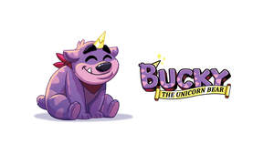
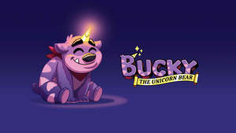

Trade Mark Journal No.2025/015 11 April 2025
UK00004172382 12 March 2025 (3,9,10,11,12,14,15,16,18,20,21,24,25,27,28,29,30,32,35,41,42)
Mark 1

Mark 2

- Class 3
- Baby bubble bath; Cosmetics for children; Colour cosmetics for children; Baby wipes; Baby shampoo; Baby lotion; Baby lotions; Baby powder; Baby oils; Baby oil; Baby suncreams; Baby powders; Baby body milks; Baby bath mousse; Baby bottom balm; Baby shampoo mousse; Shampoos for babies; Baby hair conditioner; Baby care products (Non-medicated -); Baby wipes impregnated with cleaning preparations; Toothpaste; Mouthwash; Swallowable toothpaste; Teeth cleaning lotions; Toilet cleaning gels; Teeth whitening pens; Non-medicated toothpaste; Cleaner for cosmetic brushes; Toilet bowl detergents; Tooth gel; Toilet soap; Non-medicated dental rinse; Dentifrice; Toothpastes; Shampoo; Hair shampoo; Dandruff shampoo; Shampoos; Hair shampoos; Waterless shampoo; Carpet shampoo; Shampoo bars; Non-medicated hair shampoos; Shampoo for animals; Dry shampoos; Emollient shampoos; Hair lotion; Waterless shampoos; Shampoos for human hair; Car shampoos; Non-medicated shampoos; Hair conditioner; Pet shampoos; Hair moisturising conditioners; Hair lotions; Hair moisturizers; Hair moisturisers; Body shampoos; Hair conditioner bars; Deodorant soap; Soap (Deodorant -); Non-medicated pet shampoos; Hair rinses; Vehicle shampoos; Hair gel; Hair rinses [shampoo-conditioners]; Shampoos for pets; Pets (Shampoos for -); Hair rinses [for cosmetic use]; Hair conditioners; Hair styling lotions; Hair balm; Non-medicated hair lotions; Colouring lotions for the hair; Hair spray; Hair gels; Hair sprays; Cosmetic hair lotions; Mousses [toiletries] for use in styling the hair; Shower soap; Creams (Soap -) for use in washing; Hair emollients; Refill packs for shampoo dispensers; Non-medicated balm for hair; Hair bleach; Hair balms; Hair pomades; Hair styling gel; Hair cosmetics; Hair serums; Aloe soap; Oils for hair conditioning; Shaving lotion; Bath lotion; Shaving soap; Hair care lotions; Hair tonic [non-medicated]; Hair balsam; Hair mascara; Detergent soap; Conditioners for treating the hair; Shampoos for vehicles; Hair tonic; Hair mousse; Hair tonic [for cosmetic use]; Hair texturizers; Hair oils; Hair styling gels; Styling gels for the hair; Hair creams; Hair conditioners for babies; Hair tonics; Styling sprays for the hair; Hair styling spray; Antiperspirant soap; Soap (Antiperspirant -); Hair strengthening treatment lotions; Shaving soaps; Shampoos for pets [non-medicated grooming preparations]; Shaving lotions; Shower and bath gel; Bath and shower gel; Hair relaxers; Aftershave lotions; Bath soap; Aloe soaps; Dandruff shampoos, not for medical purposes; Hair tonics [for cosmetic use]; After-shave gel; Conditioners in the form of sprays for the scalp; Hair care lotions [for cosmetic use]; Roll-on deodorants [toiletries]; Hair-washing powder; After-shave lotions; Hair cream; Hair bleaches; Shower gel; Bath and shower oils [non-medicated]; Depilatory lotions; Gels for fixing hair; Liquid bath soap; Bath bombs; Bubble bath; Bath powder; Bath salts; Bath cream; Shower and bath foam; Bath and shower foam; Bubble bath preparations; Bath gel; Bath and shower preparations; Shower and bath preparations; Preparations for use in the bath or shower; Preparations for the bath and shower; Bubble bath [for cosmetic use]; Bath oil; Bath foam; Foam bath; Cosmetic bath salts; Bath and shower gels; Bath soaps; Liquid soap used in foot bath; Bath flakes; Bath milk; Cosmetic preparations for bath and shower; Bath creams; Bath beads; Bath gels; Bubble bath preparations [for cosmetic use]; Bath preparations; Preparations for the bath; Bath oils; Bath crystals; Foams for the bath; Bath foams; Bath powder [cosmetics]; Liquid bath soaps; Bath pearls; Bubble baths; Foam bath preparations; Bath herbs; Foaming bath liquids; Foaming bath gels; Non-medicated bath salts; Liquid soap used in foot baths; Non-medicated bubble bath preparations; Bath soak for cosmetic use; Aromatic oils for the bath; Bath crystals (Non-medicated -); Cakes of soap; Soap (Cakes of -); Sandcloth; Eau-de-cologne; Jewellers' rouge; Rouge (Jewellers' -); Cobblers' wax; Wax (Cobblers' -); Destainers; Shampoo-conditioners; Anti-freckle creams.
- Class 9
- Digital book readers; Electronic book readers; Electronic book reader covers; Motion picture films; Audio books; Talking books; Digital picture frames; Games software for use with video game consoles; Computer games; Games software; Computer programs for playing games; Computer programmes for playing games; Games cartridges for use with electronic games apparatus; Game programs for arcade video game machines; Video games software; Downloadable computer games; Computer game software for use with on-line interactive games; Downloadable interactive entertainment software for playing video games; Animated cartoons; Cartoons (Animated -); Animated cartoons in the form of cinematographic films; Animated films; Downloadable animated cartoons; Video disks with recorded animated cartoons; Video tapes with recorded animated cartoons; Video films; Interactive graphics screens; Protective helmets for children; Prerecorded video cassettes featuring cartoons; Baby monitors; Baby scales; Baby alarms; Video baby monitors; Electronic imaging devices; Electronic memory devices; Electronic game software for handheld electronic devices; Wearable digital electronic communication devices; Software related to handheld digital electronic devices; Electronic paper (display devices); Electronic paper being display devices; Electronic personal alarm devices; Remote controls for mobile electronic devices; Testing devices for electronic parts; Electronic game software for wireless devices; Electronic baby monitoring devices; Electronic metering devices for faucets; Information storage devices [electric or electronic]; Computer software for use on handheld mobile digital electronic devices and other consumer electronics; Wireless remote controls for portable electronic devices and computers; Electronic components for computers; Electronic tablets; Electronic sensors; Handheld communication devices; Electronic anti theft devices; Computer hardware modules for use in Internet of Things electronic devices; Electronic components; Watchbands that communicate data to other electronic devices; Electric mobile digital communication devices; Downloadable electronic game software for wireless devices; Wearable digital electronic devices capable of providing access to the Internet; Electronic device software drivers that allow computer hardware and electronic devices to communicate with each other; Electronic styluses; Electronic semi-conductors; Electronic components used in machines; Digital electronic controllers; Testing apparatus for checking electronic devices; Electronic control circuits for electronic musical instruments; Electronic components used in apparatus; Electronic controllers; Electronic pagers; Handheld computing devices; Multimedia devices; Electronic communications instruments; Digital sensory devices; Electronic circuits; Telecommunications devices; Electrical and electronic components; Electronic communications apparatus; Electronic scanners; Electronic doorbells; Optical electronic components; Audio electronic apparatus; Hand-held electronic dictionaries; Electronic telecommunications instruments; Electric and electronic components; Electronic wirelessly enabled doorbells; Computer hardware modules for use in electronic devices using the Internet of Things [IoT]; Electronic notebooks; Electronic baby monitoring listening devices; Wireless controllers to remotely monitor and control the function and status of other electrical, electronic, and mechanical devices or systems; Downloadable mobile applications for use with wearable computer devices; Transistors [electronic]; Electronic connectors; Electronic communication equipment and instruments; Portable digital electronic scales; Electronic display interfaces; Wristband computer devices; Electronic telecommunications apparatus; Electronic cables; Semiconductor devices; Batteries for use with mobile telecommunication devices; Wearable communications devices in the form of wristwatches; Electronic digitisers; Electronic chips; Telecommunication devices and apparatus; Electronic encryption units; Wireless portable printers for use with laptops and mobile devices; Electronic amplifiers; Electronic control systems for machines; Electronic decoders; Electronic notepads; Electrical controlling devices; Input devices for computers; Earphones for use with mobile telecommunication devices; Electronic calculators; Electronic components for gambling machines; Middleware for management of software functions on electronic devices; Wireless communication devices; Computer applications for automotive electronic control; Electric and electronic security apparatus and instruments; Software applications for use with mobile devices; Software applications for mobile devices; Software and applications for mobile devices; Earphones for handheld electronic game apparatus; Electronic control systems; Monitors for handheld electronic game apparatus; Electrical and electronic instruments for logging data; Electronic oscillators; Electronic taximeters; Electrical and electronic instruments for storing data; Tactile screens [electronic]; Electrical and electronic instruments for processing data; Waveguides (Electronic -); Downloadable applications for use with mobile devices; Downloadable applications for mobile devices; Electronic tracking apparatus and instruments; Electronic locking systems; Electronic metronomes; Hand-held electronic scales; Electrical and electronic apparatus for logging data; Electronic doorlocks; Circuits [electric or electronic]; Electronic surveillance apparatus; Electronic pens; Wearable computer peripheral devices; Electronic game software for mobile phones; Electronic navigation systems; Electronic displays; Connectors for electronic circuits; Electronic relays; Electrical and electronic instruments for the transmission of data; Electronic plotters; Electronic control instruments; Electrical and electronic test apparatus and instruments; Shaver sockets (Electric -); Prerecorded video cassettes featuring animated fictional stories; Animation software; 3D animation software; Pre-recorded motion picture films; Prerecorded motion picture films; Pre-recorded films; Software for interactive television; Interactive video game programs; Pre-recorded cinematographic films; Computer programmes for interactive television and for interactive games and/or quizzes; Interactive video software; Downloadable films; Interactive multimedia game programs; Movie film developing machines; Integrated circuits for enhanced graphics and video rendering; Interactive video apparatus; Prerecorded motion picture videos; Interactive DVDs; Projection screens for movie films; Editing machines for movie films; Interactive multimedia computer games programmes; Interactive television terminal sets; Transparent conductive films for displays; Interactive multimedia computer game programs; Pre-recorded DVDs featuring games; Interactive entertainment computer software for video games; Downloadable movies; Interactive multimedia computer game program; Downloadable video recordings featuring music; Holographic film; Prerecorded video cassettes featuring music; Protective films adapted for computer screens; Pre-recorded DVDs featuring music; Polarizing films for displays; Interactive multimedia computer programs; Interactive computer game programs; Cinematographic films; Downloadable video game programs; Film screens; Interactive multimedia software for playing games; Pre-recorded video tapes featuring games; Interactive game software; Computer programs for editing images, sound and video; Pre-recorded videos; Interactive software; Boots [protective footwear]; Magnets; Refrigerator magnets; Fridge magnets; Decorative magnets; Ornamental magnets; Decorative refrigerator magnets; Decorative magnets in the shape of letters; Magnetic strip cards; Magnetic pens; Magnetic badges; Decorative magnets in the shape of animals; Printed cards [magnetic]; Trading cards [magnetic]; Mousepads; Bicycle helmets; Motorcycle helmets; Helmets for bicycles; Riding helmets; Helmets (Riding -); Music recordings; Music headphones; Music cassettes; Music tapes; Music software; Downloadable music sound recordings; Prerecorded music videos; Digital music players; Tape recordings of music; Pre-recorded CDs featuring music; Downloadable digital music; Audio tapes featuring music; Electronic sheet music, downloadable; Portable music players; Musical video recordings; Phonograph records featuring music; Prerecorded music audio tapes; Downloadable music files; Pre-recorded audio cassettes featuring music; Downloadable musical sound recordings; Digital music downloadable from the Internet; Musical recordings; Musical sound recordings; Prerecorded audio tapes featuring music; Docking stations for digital music players; Prerecorded video tapes featuring music; Pre-recorded video tapes featuring music; Computer software for creating and editing music and sounds; Optical discs featuring music; Pre-recorded laser discs featuring music; Series of musical sound recordings; Lens caps; Safety caps; Protective caps for cameras; Notebook PCs; Cases adapted for notebook computers; Pocket computers for note-taking; Notebook computer carrying cases; Notebook computer cooling pads; Laptops [computers]; Netbooks [computers]; Netbook computers; Digital notepads; Laptop computers; Laptop bags; 2-in-1 laptops; Sleeves for laptops; Leather cases for tablet computers; Convertible laptops; Cooling pads for laptop computers; Covers for tablet computers; Tablet computers; Battery chargers for laptop computers; Bags adapted for laptops; Stylus pens for touchscreens; Cases for tablet computers; Computer whiteboards; Battery chargers for tablet computers; Cases adapted for netbook computers; Laptop cases; Document printers for computers; Document printers for use with computers; Protective films for tablet computers; Desktop computers; Palmtop computers; Protective covers for tablet computers; Protective cases for tablet computers; Hybrid laptops; Laptop sleeves; Computer styluses; Laptop covers; Touchpads for computers; Adjustable desktop mounts for tablet computers; Flip covers for tablet computers; Wireless headsets for tablet computers; Keyboards for tablets; Fluorescent lamp ballasts; Fluorescent lamp ballast for electric lights; Beacon lamps; Lamp starters; Ballasts for halogen lamps; Optical lamps; Signalling lamps; Switchboard indicating lamps; Ballasts for halogen lights; Computer application software for use with wearable computer devices; Computer peripheral devices; Peripheral devices (Computer -); Computer memory devices; Computers and computer hardware; Computer game software for use on mobile devices; Computer software for communicating with users of hand-held computers; Computer programs for connecting remotely to computers or computer networks; LAN [local area network] computer cards for connecting portable computer devices to computer networks; Computer software for accessing computer networks; Peripherals adapted for use with computers and other smart devices; Computer software for mobile phones; Computer software for testing vulnerability in computers and computer networks; Downloadable computer game software via a global computer network and wireless devices; Computer systems; Computer software for the monitoring of computer systems; Wireless computer peripherals; Software for tablet computers; Computer interfaces; Computer peripherals; Wearable computer peripherals; Microchips [computer hardware]; Computer software for cellular phones; Computer application software for mobile phones; Mobile computers; Computer software adapted for use in the operation of computers; Computer application software for mobile telephones; Computer touchscreens; Computer chipsets; Application software for wireless devices; Computer hardware; Hardware (Computer -); Monitors [computer hardware]; Tablet computer; Computer software for the detection of threats to computer networks; Wearable computer hardware; Software for computers; Computer software for controlling the operation of audio and video devices; Computer programs for searching remotely for content on computers and computer networks; Computer software applications; Computer software for monitoring the use of computers and the internet by children; Computer software; Firmware for computer peripherals; Computer programs and software for image processing used for mobile phones; Computer modems; Computer networks; Handheld computers; Computers; Computer programs for searching the contents of computers and computer networks by remote control; Computer controllers; Computer network hardware; Computer software for mobile applications that enable interaction and interface between vehicles and mobile devices; Computer screens; Controlling software for computer printers; Trackballs [computer apparatus]; Computer keypads; Computer software downloadable from global computer networks; Computer software for use in computer access control; Computer software for use in computer network access control; Trackballs [computer peripherals]; Computer printers; Computer software platforms; Interfaces for computers; Computer interface software; Computer apparatus; Operating computer software for main frame computers; Computer peripheral equipment; Computer hardware for telecommunications; Application software for mobile devices; Computer operating software; Computer networking hardware; Computer gaming software; Portable computers; Hand-held computers; Computer operating systems; Computer software for wireless network communications; Computer interface apparatus; Computer keyboards; Computer software to enable browsing on global computer networks; Communications servers [computer hardware]; Computer monitors; Computer modules; Computer terminals; Computer keyboard controllers; Computer software to enable the transmission of photographs to mobile telephones; Interactive computer systems; Computer firmware; Operating and user instructions stored in digital form for computers and computer software, in particular on floppy disks or CD-ROM; Computer telephony software; Computer game software for use on mobile and cellular phones; Computer software for use in migrating between different computer network operating systems; Computer motherboards; Tablet computer cases; Computer joysticks; Computer telephony equipment; Computer games software; Networking devices; Computers for managing control devices for aircraft; Computer software for encryption; Computer software for use in programming facsimile machines; Computer network adapters; Cartridges [software] for use with computers; Games software for use with computers; Computer software for controlling amplifiers; Computer software downloadable from global computer information networks; Computer cables; Virtual reality headsets; Virtual reality models; Virtual reality controllers; Virtual reality goggles; Virtual reality software; Virtual reality software for playing virtual reality games; Virtual reality glasses; Virtual and augmented reality software; Virtual reality software for simulation; Headsets for virtual reality games; Software for virtual reality cinema; Virtual reality software for education; Virtual reality game software; Virtual reality games software; Virtual Reality [VR] motion simulators; Virtual Reality [VR] cinemas apparatus; Virtual reality software for telecommunications; Virtual reality software for medical teaching; Augmented reality software; Augmented reality software for simulation; Augmented reality game software; Augmented reality computer hardware; Augmented reality software for education; Virtual reality headsets adapted for use in playing video games; Augmented reality software for creating maps; Augmented reality software for use in mobile devices for integrating electronic data with real world environments; Virtual classroom software; Augmented reality software for use in mobile devices; Devices for the projection of virtual keyboards; Head mounted augmented reality displays; Virtual assistant software; VPN [virtual private network] hardware; Virtual server software; Downloadable software, namely virtual currency; Downloadable virtual footwear; Downloadable virtual clothing; Downloadable virtual handbags; Downloadable virtual luggage; VPN [virtual private network] operating software; Downloadable virtual headwear; Software for generating virtual images; Downloadable application software for virtual environments; Apparatus for generating virtual images; Downloadable virtual works of art; Downloadable software, namely virtual clothing; Downloadable software, namely virtual clothing for use in computer games; Downloadable software, namely virtual bags; Simulation software for use in digital computers; Gaming software that generates or displays wager outcomes of gaming machines; Software for the integration of artificial intelligence and machine learning in the field of Big Data; Television remote controllers; Simulation software [entertainment]; Interactive casino games provided through a computer or mobile platform; Electronic Interfaces for Motion Simulator Platforms; Telepresence robots; Holographic projection apparatus; Head-mounted holographic displays; Smartglasses; Holographic apparatus; Selfie sticks used as smartphone accessories; Parts and fittings for computers; Flash-bulbs; Macroscopes; Smartbands; Magnetizers; Clapperboards; Photo-semiconductors; Field-glasses; Telewriters; Thermoprinters; Telecameras; Teleconvertors; Earphones; Headphones; Earbuds; In-ear headphones; Earphones for smartphones; Stereo headphones; Wireless headphones; Ear pads for headphones; Two-way plugs for headphones; Adapter cables for headphones; Headphones for smart phones; Earphones for cellular telephones; Cases for headphones; Noise cancelling headphones; Headphone amplifiers; Headsets; Anti-dust plugs for earphone jacks; Bone conduction earphones; Wireless headsets; Wireless headsets for smartphones; Headsets for smartphones; Wireless headsets for cellphones; Binaural microphones; Ear phones; Headphone consoles; Microphone plugs; Wireless speaker microphones; Wireless headsets for smart phones; Telephone earpieces; Microphone cables; Wireless audio speakers; Personal headphones for sound transmitting apparatuses; Headsets for telephones; Dust proof plugs for earphone jacks; Hands-free headsets for cell phones; Personal headphones for use with sound transmitting systems; Wireless headsets for mobile phones; Earphones for consumer video game apparatus; Wireless speakers; USB cables for cellphones; Telephone headsets; Loudspeaker cables; Headsets for use with computers; Cords for sunglasses; Hands-free microphones for cell phones; Audio speaker enclosures; Audio speakers; Wireless headsets for use with mobile telephones; Microphones; Clip-on sunglasses; Ear plugs for divers; Audio speakers for automobiles; Audio cables; Wearable speakers; Soundbar speakers; Portable vibration speakers; Portable speakers; Speakers [audio equipment]; Ear buds; Headsets for mobile telephones; Dustproof plugs for jacks of mobile phones; Audio speakers for vehicles; Portable speaker docks; Microphones for communication devices; Stereo amplifiers; Car speakers; Audio speakers for home; Microphone buttons; Audio adaptors; Cords for eyeglasses; Mobile phone speakers; Wireless charging pads for smartphones; Audio cable connectors; Loudspeakers; Phone plugs; Earpieces for remote communication; Stereos; Audio amplifiers; Audio devices and radio receivers; Automobile stereo adapters; Electronic microphone splitters; Wearable audio equipment; Auxiliary speakers for mobile phones; Anti-dust plugs for cell phones; USB cables; Audio cable; Loudspeaker housings; Multi-room audio devices; Audio transmitters; Pairable wireless speakers; Audio cassette player head cleaners; Portable audio players; Sunglass cords; Foldable smartphones; Wireless battery chargers; Car stereos; Sub-woofers; Audio head cleaners; Speakers; Antenna cables; Smartphone battery chargers; Speaker enclosures; Horns for loudspeakers; Car audio apparatus; Loud speakers; Cassette head cleaners for audio tapes; Portable radios; Audio frequency amplifiers; Wireless audio and video receivers; Anti-dust plugs for charger ports; Audio loudspeaker systems; Electronic audio signal processors for compensating sound distortion in speakers; Listening devices for monitoring babies; Optic discs carrying audio recordings; USB chargers for electronic cigarettes; Straps for sunglasses; Wireless chargers; Guitar cables; Signal processors for audio speakers; Smart speakers; Magnetic clip-on sunglass lenses; Audio cassettes; Cassettes [audio]; Portable digital audio broadcasting [DAB] radios; Laptop carrying cases; Smartphone software; Wearable smartphones; Smartphone camera lenses; Wrist-mounted smartphones; Smartphone screen magnifiers; Waterproof smartphone cases; Devices for hands-free use of mobile phones; Software for smartphones; Mobile phones; Cameras for smartphones; Software for mobile phones; Mobile apps; Mobile phone screen protectors; Expandable screen smartphones; Braille mobile phones; Chargers for smartphones; Cases for smartphone incorporating a keyboard; Mobile phone chargers; Smartphone software applications, downloadable; Keyboards for mobile phones; Mobile phone battery chargers; Keyboards for smartphones; Battery chargers for mobile phones; Mobile phone cases; Batteries for mobile phones; Displays for mobile phones; Chargers for mobile phones; Keyboard cases for smartphones; Application software for mobile phones; Holders adapted for cell phones and smartphones; Dashboard mounts for mobile phones; Gimbals for smartphones; Displays for smartphones; Cases for mobile phones; Mobile telecommunications handsets; Mobile phone straps; Holders adapted for mobile telephones and smartphones; Digital phones; Mobile phone covers; Straps for mobile phones; Wearable smart phones; Dashboard mats adapted for holding cell phones and smartphones; Digital cellular phones; Dashboard mats adapted for holding mobile telephones and smartphones; Downloadable emoticons for mobile phones; Leather cases for mobile phones; Waterproof cases for smartphones; Selfie ring lights for smartphones; Downloadable graphics for mobile phones; Downloadable software applications for mobile phones; Flip covers for mobile phones; In-car telephone handset cradles; Display modules for mobile phones; Cases for smartphones; Mobile phone display screen protectors in the nature of films; Carriers adapted for mobile phones; Mobile phone ring holders; Screen protectors for mobile telephones; Downloadable ringtones for mobile phones; Mobile software; Mobile phone connectors for vehicles; Covers for smartphones; Display screen protectors in the nature of films for mobile phones; Holders adapted for mobile phones; Auxiliary batteries for mobile phones; Application software for smart phones; Cellular phones; Programs for smartphones; Smart phones; Hands-free holders for cell phones; Internet phones; Carrying cases for mobile phones; Protective cases for mobile phones; Cases adapted for mobile phones; Smartphones in the shape of a watch; Software for mobile device management; Mobile device management software; Mobile phone docking stations; Video phones; Screen protectors for cell phones; Stands adapted for mobile phones; Downloadable smart phone applications (software); Watchbands that communicate data to smartphones; Fast chargers for mobile devices; Docking stations for mobile phones; Smart phones in the form of eyewear; Protective films adapted for mobile phone screens; Mobile telephones; Downloadable application software for smart phones; Tablet monitors; Leather cases for smartphones; Graphic art software; Smart watches; Personal digital assistants in the shape of a watch ; Video monitors; TV monitors; Video screens; Video streaming devices; Time measuring instruments (not including clocks and watches); Video monitor controllers; TV cameras; Wearable video display monitors; Video display screens; Video cameras; Fashion sunglasses; Antistatic bag; Headgear being protective helmets; Baseball batting helmets; Protective headgear; Riding hats; Chin straps for football helmets.
- Class 10
- Baby dummies; Baby bottles; Baby feeding dummies; Baby teething rings; Pacifiers for babies; Baby bottle nipples; Covers for baby feeding bottles; Pacifiers [babies dummies]; Feeding bottles for babies; Teething rings incorporating baby rattles; Orthopedic footwear [shoes]; Orthopaedic footwear [shoes]; Soles for shoes [orthopaedic]; Insoles for orthopaedic shoes; Insoles for shoes [orthopaedic]; Soles for footwear [orthopaedic]; Medical devices; Electronic medical instruments; Medical apparatus and devices; Digital electronic sphygmomanometers; Electronic sphygmomanometers; Interdental brushes for use in dental treatment; Brushes for cleaning body cavities; Electrical utensils for use by dentists in the care of the teeth; Disposable nozzles for dental syringes; Devices [oral irrigators] for use by dentists in washing the gums; Electric scalp massagers for household use; Mats for effervescent bath massage; Sex toys; Pads for slippers [orthopaedic]; Surgical caps; Caps for teeth; Dental caps; Surgical lamps; Arthroscopes; Anti-rheumatism bracelets; Ear plugs [hearing protection devices]; Ear plugs; Protective ear plugs; Ear plugs for soundproofing (other than for medical use); Ear plugs for sleeping; Ear adaptors for hearing aids; Ear protectors; Noise reduction ear plugs; Ear thermometers; Ear plugs for protection against noise; Douche bags.
- Class 11
- Lamp bulbs; Lamp reflectors; Reflectors (Lamp -); Lamp globes; Lamps; Lamp finials; Candle lamps; Dashboard lamp bulbs; Lamp shades; Lamp mantles; Tail lamp bulbs; Table lamp (Lampshades for -); Electric lamp bulbs; Lamp glasses; Lamp fittings; Projector lamps; Reflector lamps; Infrared lamp fixtures; Lamp holders; Lamp chimneys; Chimneys (Lamp -); Lighting lamps; Lamp assemblies; Halogen lamps; Lamp stands; Lamp casings; Lamp posts; Incandescent lamps; Bedside lamps; Lamp fitments; Lights for incandescent lamps; Lamp bases; Light bulbs for gas-discharge lamps; Neon lamps for illumination; Lights for gas-discharge lamps; Pedestal lamps; Desk lamps; Light bulbs for incandescent lamps; Germicidal lamps; Fluorescent lamp tubes; Portable lamps [for illumination]; Washstand lamps; Wall lamps; Lamp standards; Fluorescent lamps; Table lamps; Glass covers being fittings for lamps for sun lamps; Illuminant lamps for projectors; Lamps for vehicle lighting; Sun lamps; Floor lamps; Portable hand lamps [for illumination]; Globes for lamps; Lamps (Globes for -); Reflectors for lamps; Arc lamps [lighting fixtures]; Spot lamps for household illumination; Mercury lamps; Aquarium lamps; Bicycle lamps; Spot lamps; Vacuum lamps; Electrical lamps; Oil lamps; Infrared lamps; Projection lamps; Solar lamp units; Mural lamps; Hanging lamps; Roof lights [lamps]; Electric incandescent lamps; Arc lamps; Electric lamps; Lamps (Electric -); Nail lamps; Halogen light bulb; Counterweight fittings for pendant lamps; Stroboscopic lamps [decorative]; Overhead lamps; Motorcycle lamps; Solar lamps; Studio lamps; Laboratory lamps; Reading lamps; Tanning lamps; Burners for lamps; Lamps (Burners for -); Street lamps; Standing lamps; Xenon arc lamps; Electrical lamps for outdoor lighting; Gas lamps; Hanging ceiling lamps; Lamps for security lighting; Pendant fluorescent lighting fixtures; Glass covers for lamps; Electrical lamps for indoor lighting; Lamps for lighting purposes; Lamp chimneys made of glass; Discharge lamps; Sun ray lamps; Miners' lamps; Fluorescent lamps with low ultra-violet light output; Halogen light bulbs; Emergency lamps; Ultraviolet lamps used for aquariums; Hangings for lamps; Vehicle dynamo lamps; Safety lamps; Luminous discharge lamps; LED lamps; Filaments for electric lamps; Flexible lamps; Stroboscopic lamps [light effects]; Standard lamps; Curling lamps; Chimneys for oil lamps; Casings for lamps; UV halogen metal vapour lamps; Fixtures for incandescent light bulbs; Inspection lamps; Sconce lighting fixtures; Bulbs for lighting; Incandescent lamps and their fittings; Filters for use with lamps; Incandescent light bulbs; Lights and lamps for vehicles; Incandescent lamps for optical instruments; Metal halide lamps.
- Class 12
- Hot air balloons; Air bags; Air pumps for inflating bicycle tyres; Helium filled balloons; Bicycle handlebars; Bicycle mudguards; Bike bags; Motorcycle handlebars; Bicycle tires; Bicycle tyres; Handlebars [bicycle parts]; Bicycle pedals; Road bikes; Bicycle kickstands; Bicycle rims; Bicycle brakes; Bicycle wheels; Bicycle sprockets; Bicycle cranks; Quad bikes; Bicycle handlebar grips; Mountain bikes; Bicycle saddles; Bicycle gears; Mudguards for two-wheeled bicycles; Bicycle hubs; Bicycle training wheels; Dirt bikes; Motorized dirt bikes for motocross; Road racing bicycles; Handlebars for bicycles, cycles; Bicycle spokes; Bicycle stabilisers; Mudguards for bicycles; Derailleurs for bicycles; Brakes [bicycle parts]; Racing bicycles; Bicycle racks for vehicles; Handlebar grips for bicycles; Rims for bicycle wheels; Hubs for bicycle wheels; Bicycle tires [tyres]; Motorcycle kickstands; Motorcycle tires; Bicycle wheel rims; Gear wheels [bicycle parts]; Forks [bicycle parts]; Pedal bicycles; Folding bikes; Pedals for bicycles; Bicycle frames; Tubeless tires for bicycles; Bicycle wheel hubs; Bicycle trailers; Spokes for bicycle wheels; Bicycle motors; Bicycles; Bicycle saddle covers; Sprockets [bicycle parts]; Tires for bicycles; Pumps for bicycle tyres; Pumps for bicycle tires; Water bikes; Brake shoes [bicycle parts]; Mountain bicycles; Tubeless tyres for bicycles; Saddle covers for bicycles or motorcycles; Mudguards for two-wheeled motor vehicles or bicycles; Brakes for bicycles; Bicycle seats; Motorcycle saddlebags; Bicycle stands [kickstands]; Hubs for motorcycle wheels; Wheels for bicycles; Rims for bicycles; Toeclips for use on bicycles; Motorcycle saddles; Bicycle pumps; Kickstands for bicycles; Gear wheels for bicycles; Freewheels for bicycles; Puncture repair outfits for bicycle tyres; Panniers for motorcycles; Bicycle wheel spokes; Touring bicycles; Cranks for bicycles; Handlebar ends for bicycles; Saddles for bicycles, cycles or motorcycles; Mudguards for motorcycles; Bicycle carriers; Bicycle racks [carriers]; Bicycle bells; Bicycle chains; Handlebar grips for motorcycles; Handlebars; Tubeless tires [tyres] for bicycles, cycles; Bicycle horns; Inner tubes for bicycle tires; Bicycle stands; Pedals for motorcycles; Chainwheels for bicycles; Wheel rims for bicycles; Covers for bicycle saddles; Tandem bicycles; Tires for bicycles, cycles; Inner tubes for bicycle tyres; Saddles for bicycles; Drivetrains for bicycles; Rims for wheels of bicycles; Hubs for bicycles; Disk wheels [bicycle parts]; Rims for wheels of bicycles, cycles; Wheel hubs for bicycles; Drive trains [bicycle parts]; Wheels for bicycles, cycles; Bags [panniers] for bicycles; Wheels being parts of bicycles; Tyres for bicycles, cycles; Gears for bicycles; Saddle covers for bicycles; Spokes for bicycles; Spokes of bicycles; Bicycle handle bars; Motorcycle frames; Brakes for bicycles, cycles; Spoke caps for bicycle wheels; Motorcycle foot pegs; Motorcycles for motocross; Hubs for vehicle wheels (motorcycles).
- Class 14
- Items of jewellery; Electronic clocks; Clocks for world time zones; Hat jewellery; Hat jewelry; Jewellery hat pins; Jewelry hat pins; Ornamental hat pins; Hat ornaments of precious metal; Ornaments (Hat -) of precious metal; Keyrings; Parts and fittings for jewellery; Parts and fittings for watches; Jewellery products; Jewellery items; Fitted jewelry pouches; Parts and fittings for horological instruments; Collets being parts of jewellery; Wristlets [jewellery]; Leather jewelry boxes; Ear clips; Works of art of precious metal; Watch winders; Watch dials; Watch straps; Watch glasses; Watch bracelets; Watch movements; Watch hands; Watch fobs; Watch faces; Watch boxes; Watch crystals; Watch clasps; Watch bands; Watch parts; Watch crowns; Watch pouches; Watch casings; Watch chains; Chains (Watch -); Watch cases; Clock and watch hands; Watch and clock hands; Watch springs; Springs (Watch -); Wrist watch bands; Watch cases [parts of watches]; Anchors [clock and watch making]; Dials for clock and watch making; Dials [clock and watch making]; Watch boxes [presentation]; Watch and clock springs; Pendulums [clock and watch making]; Barrels [clock and watch making]; Watches; Leather watch straps; Stop watches; Watch straps of plastic; Non-leather watch straps; Watch straps of nylon; Hands (Clock -) [clock and watch making]; Clock hands [clock and watch making]; Pendants for watch chains; Metal watch bands; Wrist watches; Metal expanding watch bracelets; Mechanical watch oscillators; Sports watches; Wristlet watches; Watches for sporting use; Quartz watches; Chronographs for use as watches; Chronographs as watches; Chronographs [watches]; Dials for watches; Straps for watches; Dress watches; Watch straps of synthetic material; Watch straps of polyvinyl chloride; Wrist straps for watches; Straps for wrist watches; Table watches; Diving watches; Jewellery boxes and watch boxes; Watches for outdoor use; Pocket watches; Bands for watches; Bracelets for watches; Alarm watches; Faces for watches; Clocks and watches; Watches and clocks; Presentation boxes for watches; Pendant watches; Automatic watches; Parts for watches; Cases for watches [presentation]; Silver watches; Watches for nurses; Movements for clocks and watches; Movements for watches and clocks; Chains for watches; Watches containing a game function; Electric watches; Women's watches; Solar watches; Cases for watches; Watch straps made of metal or leather or plastic; Divers' watches; Oscillators for watches; Electronic watches; Mechanical watches; Watches made of gold; Clocks and watches for pigeon-fanciers; Cases for watches and clocks; Clocks and watches, electric; Fittings for watches; Platinum watches; Digital watches with automatic timers; LED finger ring watches; Housings for clocks and watches; Bracelets and watches combined; Wristwatches with pedometer feature; Cases adapted for holding watches; Figurines [statuettes] of precious metal; Figurines made from silver; Figurines of precious metal; Miniature figurines [coated with precious metal]; Figurines made from gold; Figurines made of imitation gold; Holiday ornaments [figurines] of precious metal, other than tree ornaments; Figurines of precious stones; Ornamental figurines made of precious metal; Figurines coated with precious metal; Model figures [ornaments] made of precious metal; Model figures [ornaments] coated with precious metal; Collectible coins; Ornaments [statues] made of precious metal; Figurines for ornamental purposes of precious stones; Shoe jewellery; Fashion jewellery; Shoe jewelry; Ear studs.
- Class 15
- Musical instruments for children; Electronic synthesizers; Electronic organs; Kazoos [not being toys]; Music synthesizers; Synthesizers (Music -); Music rests for musical instruments; Music rolls [piano]; Music boxes; Music stands; Stands (Music -); Music stands adapted for use with musical instruments; Electronic apparatus for synthesising music [musical instrument]; Electronic background music machines; Sheet music stands; Music pitch pipes; Synthetic music apparatus; Electronic musical synthesizers; Musical synthesizers; Electronic musical instruments; Mouthpiece caps for musical instruments; Musical accessories; Clarionets; Musical boxes in the form of porcelain bisque figurines; Guitar shoulder straps; Singing bowls.
- Class 16
- Picture books; Books for children; Baby books [storybooks]; Coloring books for adults; Poster books; Story books; Baby books; Coloring books; Painting books; Picture postcards; Sketch books; Drawing books; Books; Colouring books; Non-fiction books; Recipe books; Comic books; Picture cards; Coloring pictures; School writing books; Book wrappings; Song books; Writing or drawing books; Series of non-fiction books; Educational books; Graphic art books; Autograph books; Sticker books; Book marks; Printed books; Music note books; Colouring pictures; Sticker activity books; Printed music books; Composition books; Fiction books; Books featuring fictional stories; Postcards and picture postcards; Books featuring fantasy stories; Flip books; Activity books; Fantasy books; Manga comic books; Covers for books; Book ends; Photograph album pages; Pop-up books; Music books; Series of fiction books; Pictures; Commemorative books; Jackets of paper for books; Art pictures; Clothing patterns; Trading cards other than for games; Animation cels; Graphic drawings; Cartoon prints; Storybooks; Modeling clay for children; Children's storybooks; Paper baby bibs; Paper bibs for babies; Baby memory books; Decorative stickers for soles of shoes; Electrical and electronic typewriters; Electronic typewriters; Eraser dusting brushes; Brush pens; Electric erasers; Writing brush washing saucers; Pencil sharpeners, electric or non-electric; Writing brush washers; Magnetic paint brush holder clips; Cartoon strips; Printed cartoon strips; Comic strips' comic features; Manga graphic novels; Typographic characters; Printed stories in illustrated form; Series of computer game hint books; Video game strategy guidebooks; Book covers; Wallpaper sample book; Children's books incorporating an audio component; Globes; Terrestrial globes; Globes (Terrestrial -); Celestial globes; Magnetic levitation floating globes; Photograph corners; Whiteboards having magnetic properties; Metal drawing pins; Mats of paper for beer glasses; Paper mats for beer glasses; Mats of paper for drinking glasses; Holders for notepads; Pencil cups; Sheet music; Music magazines; Music scores; Music sheets; Printed music; Music in sheet form; Instruction manuals for music synthesizers; Printed sheet music; Printed books in the field of music education; Food wrappers; Cap erasers; Pencil caps; Trading card milk bottle caps; Milk bottle caps [trading cards]; Pocket pen shields; Notebooks; Spiral-bound notebooks; Pocket notebooks; Blank paper notebooks; Notebook dividers; Holders for notebooks; Notebook paper; Notepads; Reporters' notebooks; Notebook covers; Jotters; Sketchbooks; Binders [stationery]; Paper folders [stationery]; Wirebound books; Pocket books [stationery]; Folders [stationery]; Stationery folders; Illustrated notepads; Loose-leaf binders; Binders (Loose-leaf -); Pencil ornaments [stationery]; Pencil ornaments (stationery); Boxes for pens; Pen and pencil boxes; Adhesive notepads; Desk diaries; Folders for papers; Paper folders; Pen calligraphy copybooks; Marking pens [stationery]; Paper sheets [stationery]; Paper stationery; Stands for pens and pencils; Pens; Pencils; Stationery boxes; Glue pens for stationery purposes; Blank journal books; Scribbling pads; Envelopes [stationery]; Pencil boxes; Paper tapes for calculators; Pen boxes; Clips for paper [stationery]; Blank writing journals; Pencils with erasers; Pocket diaries; Copying paper [stationery]; Files [stationery]; Writing cases [stationery]; Writing stationery; Transparencies [stationery]; Glitter pens for stationery purposes; Blank journals; Writing tablets; Copybooks; Pads [stationery]; Stationery; Self-adhesive paper for notes; Pen and pencil cases; Inkless pens; Envelopes for stationery use; Notepaper; Ledgers [books]; Pocket memorandum books; Whiteboards; Paper staplers; Staplers for paper; Office paper stationery; Binders; Loose-leaf pads; Book binders; Wrappers [stationery]; Printed stationery; Felt-tip pens; Thumbtacks [stationery]; Drawing pens; Ballpoint pens; Writing paper pads; Protractors [for stationery and office use]; Pencil trays; Pencil erasers; Bags [envelopes, pouches] of paper or plastics, for packaging; Highlighter pens; Slate pencils; Blank paper computer tapes for recording programs; Stickers [stationery]; Diaries; Scribble pads; Reinforced stationery tabs; Drawing materials for blackboards; Steel pens [styluses or stencil pens]; Whiteboard erasers; Ball-point pens; Binders (office supplies); Binders [office supplies]; Holders for desk accessories; Desk baskets for desk accessories; Noteboards; Photo-engravings; Padded bags of paper; Padded bags of card; Plastic bags for packing; Art prints; Graphic art prints; Printed art reproductions; Fine art prints; Graphic art reproductions; Art paper; Works of art of paper; Lithographic works of art; Art etchings; Graphic prints; Dye-sublimation print paper; Decoration and art materials and media; Laser print paper; Printed periodicals in the field of figurative arts; Canvas prints; Digital printing paper; Prints; Photographic prints; Photographic or art mounts; Works of art made of paper; Pictorial prints; 3D wall art made of paper; Paper for use in the graphic arts industry; Print letters; Photographic printing paper; Print characters; Lithographic prints; Giclee prints; Works of art and figurines of paper and cardboard, and architects' models; Photo prints; Graphic prints and representations; Paper for printing photographs; Graphic reproductions; Reproductions (Graphic -); Art mounts; Print blocks; Colored craft and art sand; Papers for use in the graphic arts industry; Prints [engravings]; Engravings [prints]; Sheet music in printed form; Ink sheets for use in reproducing images in the printing industry; 3D wall art made of card; Print wheels; Printing paper; Printed periodicals in the field of music; Figurines [statuettes] of papier mâché; Figurines made from cardboard; Figurines of papier mâché; Figurines made from paper; Plastic shopping bags; Paper shopping bags; Gift bags; Freezer bags; Sandwich bags; Plastic sandwich bags; Carrier bags; Dustbin liner bags of plastic; Plastic bags for wrapping; Paper toilet bowl liners.
- Class 18
- Clothes for animals; Baby backpacks; Umbrellas for children; Pouch baby carriers; Baby carrying bags; Slings for babies; Slings for carrying babies; Dog shoes; Knitted bags; Boxes of leather (Hat -); Hat boxes of leather; Souvenir bags; Music bags; Music cases; Briefcases for documents; Bags (Game -) [hunting accessories]; Game bags [hunting accessories]; Bags for sports clothing; Straps for handbags; Holdalls for sports clothing; Leatherboard; Bridoons; Pouchettes; Beachbags; Head-stalls; Backpacks; Backpacks [rucksacks]; Duffel bags; Duffle bags; Duffel bags for travel; School backpacks; Carry-all bags; Backpacks for carrying infants; Carry-on bags; Backpacks for carrying babies; Tote bags; Carrying bags; Hiking bags; Small backpacks; Cross-body bags; Camping bags; Hiking rucksacks; Wrist mounted carryall bags; Rucksacks; Handbag straps; Drawstring bags; Sling bags; Luggage bags; Grocery tote bags; Waterproof bags; Crossbody bags; All-purpose carrying bags; Straps for suitcases; Daypacks; Carry-on suitcases; Sling bags for carrying infants; Belt bags and hip bags; Toiletry bags; Shoe bags for travel; Straps for luggage; Luggage straps; Wash bags for carrying toiletries; Bags for school; School bags; Sling bags for carrying babies; Traveling bags; Schoolbags; Bags for clothes; Travel bags; Bags for travel; Belt bags; Leather luggage straps; Bags; Gym bags; Umbrella bags; Schoolchildren's backpacks; Drawstring pouches; Shoulder bags; Travelling bags; Shoe bags; Bags for carrying pets; Diaper bags; Lockable luggage straps; Bucket bags; Trolley duffels; Garment bags for travel; Bags (Garment -) for travel; School knapsacks; Leather bags; Waist bags; Trunks and traveling bags; Travelling bags [leatherware]; Wheeled bags; Leather suitcases; Canvas bags; Bags for carrying animals; Kit bags; Suit bags; Leather shopping bags; Small rucksacks; Leather bags and wallets; Attaché bags; Trunks and travelling bags; Messenger bags; Tool bags of leather, empty; Luggage, bags, wallets and other carriers; Suitcase handles; Handles (Suitcase -); Canvas shopping bags; School book bags; Courier bags; Boot bags; Cabin bags; Two-wheeled shopping bags; Hunting bags; Wheeled shopping bags; Knapsacks; Bags for campers; Satchels (School -); School satchels; Suitcases; Luggage; Travel luggage; Bags [envelopes, pouches] of leather, for packaging; Bags [envelopes, pouches] of leather for packaging; Purse frames [handbags]; Clutch purses [handbags]; Handbags; Clutch handbags; Leather handbags; Handbags, purses and wallets; Fashion handbags; Leather purses; Purses [leatherware]; Clutch purses; Purses; Handbags for ladies; Ladies handbags; Leather coin purses; Pocketbooks [handbags]; Cosmetic purses; Handbags made of leather; Slouch handbags; Imitation leather bags; Clutches [purses]; Evening handbags; Small clutch purses; Clutch bags; Purse frames; Purses, not of precious metal [handbags]; Card wallets [leatherware]; Make-up bags; Garment bags for travel made of leather; Makeup bags; Travelling bags made of imitation leather; Leather wallets; Straps for coin purses; Briefcases [leatherware]; Coin purse frames; Multi-purpose purses; Handbags made of imitations leather; Cosmetic bags; Carryalls; Gentlemen's handbags; Garment bags; Travelling bags made of leather; Luggage tags [leatherware]; Leather briefcases; Leather pouches; Pouches of leather; Coin purses; Handbags for men; Bags [envelopes, pouches] for packaging of leather; Wallets (Pocket -); Pocket wallets; Textile shopping bags; Leather luggage tags; Purses, not made of precious metal [handbags]; Leather for shoes; Nappy bags; Satchels; Bags made of imitation leather; Gent's handbags; Knitting bags; Evening purses; Bags made of leather; Briefcases [leather goods]; Small purses; Toiletry bags sold empty; Chain mesh purses; Bum bags; Toilet bags; Children's shoulder bags; Shoulder straps; Straps (Leather shoulder -); Leather shoulder straps; Shoulder belts; Leather shoulder belts; Belts (Leather shoulder -); Shoulder belts [straps] of leather; Hand bags; Hip bags; Nose bags [feed bags]; Bags (Nose -) [feed bags]; Nose bags; Barrel bags; Cloth bags; Mesh shopping bags; Mesh bags for shopping; Grips for holding shopping bags; Roll bags; Chin straps, of leather; Grips [bags]; Towelling bags.
- Class 20
- Stuffed pillows; Inflatable pillows; Electric baby cradles; Baby walkers; Baby gates; Baby bolsters; Cribs for babies; Cots for babies; Playpens for babies; Furniture for babies; Bath seats for babies; Baby changing tables; Reusable baby changing mats; Baby changing platforms; Portable baby bath seats for use in bath tubs; Bath pillows; Wooden tubs [not bath tubs]; Bath seats; Bath kneeling pads; Chests for toys; Toy boxes [furniture]; Gazing globes; Inflatable pillows [other than for medical use] for fitting around the neck; Air pillows; Air cushions; Air mattresses; Containers, not of metal, for compressed gas or liquid air; Food racks; Cap closures (Non-metallic -) for bottles; Non-metallic bottle caps; Plastic caps; Socket head cap screws, not of metal; Non-metal bottle caps; Cap closures (Non-metallic -) for containers; Caps, not of metal (Bottle -); Bottle caps, not of metal; Non-metallic sealing caps; Corner cap components, not of metal; Caps (Non-metallic -) for screws; Screw caps, not of metal; Non-metal caps for bottles; Sealing caps, not of metal; Caps, not of metal (Sealing -); Decorative nut caps [non-metallic]; Self-locking protective plastic caps for use with bolts; Self-locking protective plastic caps for use with nuts; Non-metallic caps and closures for bottles and for containers; Composite caps of non-metallic materials for closing bottles; Screw tops, not of metal, for bottles; Hat stands; Mirrors enhanced by electric lights; Trays being parts of shop display furniture; Clothes racks [furniture]; Consoles [furniture] for mounting units of electronic equipment; Furniture parts; Closet organisers [parts of furniture]; Covers for clothing [wardrobe]; Drawers [furniture parts]; Drawers as furniture parts; Hat racks [furniture]; Audio racks [furniture] for use with audio equipment; Furniture racks; Racks [furniture]; Clothes hangers, clothes stands [furniture] and clothes hooks; Stationery cabinets [furniture]; Countertops [furniture parts]; Kits of parts [sold complete] for assembly into articles of furniture; Luggage racks being furniture; Parts of furniture (Non-metallic -); Units [furniture] for the display of stationery; Non-metallic fittings for furniture; Panels being parts of furniture; Bassinettes; Chaise-longues; Bed-settees; Coatstands; Flower-stands; Ambroid bars; Sleeping bag pads; Luggage lockers; Figurines of resin; Miniature figurines [plastic]; Figurines of ivory; Wax figurines; Figurines of wood; Statuettes of resin; Figurines [statuettes] of wood, wax, plaster or plastic; Figurines made of plaster; Figurines made of wood resin; Ornamental figurines made of plaster; Ornamental figurines made of wax; Figurines made of wood; Ornamental figurines made of wood; Cold cast resin figurines; Figurines of wood, wax, plaster or plastic; Statuettes of ivory; Model figures [ornaments] made of plastic; Model figures [ornaments] made of wax; Plastic statues; Model figures [ornaments] made of plaster; Statuettes of bone; Model figures [ornaments] made of wood; Figurines made of plastics; Ornaments [statues] made of wax; Miniature car models [ornaments] of wood; Commemorative statuary cups of wood, wax, plaster or plastic; Statues of ivory; Make-up mirrors for purses; Bean bag cushions; Bean bag pillows; Beds, bedding, mattresses, pillows and cushions; Pillows; Bed mattresses; Scented pillows; Bedsteads; Bean bag chairs; Shoulder poles [yokes]; Bean bag beds; Bean bags; Hat hooks, not of metal.
- Class 21
- Potties for children; Baby bathtubs; Baby baths; Baby baths, portable; Baby finger toothbrushes; Foldable bath tubs for babies; Inflatable bath tubs for babies; Toothbrush bristles; Toothbrushes; Toothbrush holders; Toothbrush containers; Toothbrushes, electric; Electric toothbrushes; Toothbrush cases; Toothbrushes [non-electric]; Non-electric toothbrushes; Manual toothbrushes; Electrical toothbrushes; Holders for toothbrushes; Battery-powered dental flossers; Tooth brushes, non-electric; Electric tooth brushes; Electric and non-electric toothbrushes; Heads for electric toothbrushes; Interdental brushes for cleaning the teeth; Toilet brushes; Finger toothbrushes for babies; Toothbrushes for pets; Oral care kits comprising toothbrushes and floss; Tooth brushes; Shampoo brushes; Toothpaste squeezers; Toothpaste dispensers; Lavatory brushes; Shaving brushes; Toilet brush holders; Shaving brush holders; Interdental brushes; Dental floss dispensers; Toothbrushes for animals; Bottle cleaning brushes; Tongue cleaning brushes; Dishwashing brushes; Brushes (Dishwashing -); Holders for shaving brushes; Bathtub brushes; Denture brushes; Toilet and bathroom cleaning utensils ; Washing brushes; Sprayers for cleaning gums and teeth; Bath brushes; Hairbrushes; Facial cleansing brushes, electric and non-electric; Water flossers; Dental floss; Washing-up brushes; Bottle brushes; Electric pet brushes; Toilet brush sets; Brushes for cleaning footwear; Scrubbing brushes; Brushes for cleaning; Cleaning brushes; Clothes brushes; Shoe brushes; Water apparatus for cleaning teeth and gums; Tongue brushes; Household utensils for cleaning, brushes and brush-making materials; Medicated dental floss; Shaving brushes of badger hair; Tooth brush cases; Brushes; Electric rotating hair brushes; Dental floss [floss for dental purposes]; Dental floss (floss for dental purposes); Brushes for personal hygiene; Lint brushes; Tub brushes; Cosmetic and toilet utensils; Soap dispensing dish brushes; Carpet shampoo applicators (Non-electric -); Exfoliating brushes; Water closet brush holders; Automobile wheel cleaning brushes; Brushes for household use; Pot cleaning brushes; Cleaning brushes for feeding bottle teats; Stands for tooth brushes; Brushes for footwear; Footwear (Brushes for -); Hair brushes; Hair for brushes; Cleaning brushes for feeding bottles; Brushes with detergent containers; Shaving brush stands; Comb (electric); Brushes for cleaning bicycle components; Graters [non-electric household utensils]; Brush holders; Feeding bottle brushes; Abrasive sponges for kitchen [cleaning] use; Shampoo dispensers; Shampoo racks; Shampoo shields; Shampoo holders; Hair fixer dispensers; Baby bath tubs; Bath sponges; Stirring rods for hot bath water; Travel mugs; Exfoliating slippers; Shoe cloths; Shoe polishing mitts; Mugs; Cups and mugs; Coffee mugs; Ceramic mugs; Earthenware mugs; Porcelain mugs; Mugs of porcelain; Beer mugs; Glass mugs; China mugs; Mugs of china; Insulated mugs; Mug cosies; Mugs made of porcelain; Mugs made of earthenware; Mug racks; Drinking mugs made of porcelain; Mugs made of china; Vacuum mugs; Mugs made of plastic; Mug sleeves; Mugs made of ceramic materials; Mugs of precious metal; Drinkware; Mug trees; Teapots; Teacups (yunomi); Teacups [yunomi]; Coffee cups; Tankards; Coffee pots; Coasters (tableware); Porcelain coasters; Mugs made of fine bone china; Tea cups; Mugs, not of precious metal; Pint tankards; Tumblers for use as drinking glasses; Coffee stirrers; Carafes; Glass cups; Pewter tankards; Cups; Tumblers; Tea pots; Commemorative statuary cups of porcelain, ceramic, earthenware, terra-cotta or glass; Cups made of earthenware; Cups made of pottery; Demitasse sets comprised of cups and saucers; Figurines [statuettes] of porcelain, ceramic, earthenware or glass; Goblets; Prize cups of porcelain, ceramic, earthenware, terra-cotta or glass; Figurines of porcelain, ceramic, earthenware, terra-cotta or glass for cakes; Glass carafes; Holders for tumblers; Earthenware saucepans; Saucepans (Earthenware -); Insulated bottles [flasks]; Figurines of earthenware; Glass pots; Ceramic figurines; Trivets; Ceramic tableware; Glasses, drinking vessels and barware; Pint glasses; Souvenir plates; Cups made of china; Steins; Pewter goblets; Coffee pots [non-electric]; Non-electric coffee pots; Tumblers [drinking vessels]; Beer steins; Tea canisters; Trivets [table utensils]; Tea cosies; Cosies (Tea -); Statuettes of porcelain, ceramic, earthenware or glass; Beer jugs; Statues of porcelain, ceramic, earthenware or glass; Statues of porcelain, earthenware, ceramic or glass; Beer glasses; Cardboard cups; Drinking steins; Glass bowls; Bowls (Glass -); Busts of porcelain, ceramic, earthenware or glass; Figurines of glass; Drinking cups; Liqueur cups; Plastic cups; Insulated lids for plates and dishes; Glassware; Insulating sleeve holder for beverage cups; Figurines of porcelain, ceramic, earthenware, terra-cotta or glass; Urns being vases; Beverage glassware; Glass flasks [containers]; Japanese-style teapots [kyusu]; Plaques of earthenware; Sippy cups; Tableware of porcelain; Figurines of porcelain; Decanters; Ceramic ornaments; Crockery made of porcelain; Coffee services [tableware]; Boxes of earthenware; Glass tableware; Coffee services of ceramic; Biodegradable cups; Glass flasks; Glass decanters; Compostable cups; Plastic coasters; Tableware, cookware and containers; Chocolate molds; Hot air hair brushes; Food mashers; Food basters; Containers for bird food; Glass caps; Insulating sleeve holders for beverage cans; Drinks containers; Stirrers (Drink -); Cake pans; Baking dishes; Baking tins; Pie pans; Cupcake baking cups; Cake moulds; Silicone muffin baking liners; Cooling racks for baked goods; Cake molds; Cake trays; Cooking pans; Cake tins; Muffin pans; Baking trays made of aluminium; Baking dishes made of porcelain; Pancake frying pans; Pastry molds; Sticks for cake pops; Cake brushes; Baking dishes made of earthenware; Caddies for holding hair accessories for household and domestic use; Racks for cosmetics; Clothes drying hangers specially designed for specialty clothing; Currycombs; Clothes-pegs; Butter-dish covers; Feather-dusters; Bread-cases [for kitchen use]; Bota bags; Insulated lunch bags; 3D wall art of made of ceramic; Works of art made of porcelain; Art objects of glass; Figurines of terracotta; Figurines of china; China figurines; Fiberglass figurines; Figurines of crystal; Figurines made of porcelain; Figurines made of ceramic; Ornamental figurines made of porcelain; Figurines made of earthenware; Statuettes of porcelain; Figurines made of china; Ornamental figurines made of china; Figurines made of bone china; Figurines made of crystal; Statues of porcelain; Figurines made of glass; Statuettes of terracotta; Ornaments [statues] made of porcelain; Ornamental figurines made of glass; Figurines made of decorative glass; Statuettes of earthenware; Statuettes of china; Terra cotta figurines; Statues of earthenware; Statuettes of porcelain, ceramic, earthenware, terra-cotta or glass; Sculptures of porcelain; Figurines made of terra cotta; Stained glass figurines; Ornaments [statues] made of china; Statues of porcelain, ceramic, earthenware, terra-cotta or glass; Statues of terracotta; Statues of china; Statuettes of crystal; Figurines made of lead crystal; Statuettes made of earthenware; Model figures [ornaments] made of glass; Statues, figurines, plaques and works of art, made of materials such as porcelain, terra-cotta or glass, included in the class; Statuettes of glass; Busts of porcelain, ceramic, earthenware, terra-cotta or glass; Model vehicles [ornaments] made of porcelain; Porcelain cake decorations; Ornaments made of porcelain; Statues made of earthenware; Sculptures of terracotta; Sculptures of earthenware; Busts of porcelain; Sculptures made from porcelain; Ornamental sculptures made of porcelain; Cosmetic bags [fitted]; Tea bag rests; Piping bags ; Bowls; Soup bowls; Mixing bowls; Salad bowls; Goldfish bowls; Glass goldfish bowls; Fruit bowls; Shallow bowls; Suction bowls; Serving bowls; Finger bowls; Bowls for candy; Fish bowls; Sugar bowls; Fruit bowls of glass; Glass bowls for live goldfish; Basins [bowls]; Bowls [basins]; Flower bowls; Bowls for nuts; Serving bowls (hachi); Serving bowls [hachi]; Plastic bowls [basins]; Shaving bowls; Japanese-style soup bowls [wan]; Compostable bowls; Japanese rice bowls (chawan); Japanese rice bowls [chawan]; Bowls for sugar candy; Japanese style soup serving bowls (wan); Pet drinking bowls; Bowls for plants; Biodegradable bowls; Mixing spoons; Bowls for floral decorations; Pet feeding bowls; Pet feeding bowls, automatic; Japanese rice bowls of precious metal (chawan); Plastic bowls [household containers]; Pet feeding and drinking bowls; Japanese rice bowls not of precious metal (chawan); Japanese rice bowls not of precious metal [chawan]; Mixing spoons [kitchen utensils]; Mixing cups; Sugar bowls of precious metal; Flower bowls of precious metal; Bowls of precious metal; Soup tureens; Serving scoops [household or kitchen utensil]; Spoon rests; Sugar bowls [not of precious metal]; Salad tongs; Biodegradable paper pulp-based bowls; Wash basins [bowls, not parts of sanitary installations]; Slotted spoons; Hair tinting bowls; Chip pan baskets; Saucepan lids; Bowls made of precious metal; Serving spoons; Utensil jars; Cup lids; Wash basin pitchers; Rice paddles [cooked rice serving scoops]; Bathroom ladles; Bathroom glass holder; Pot scrapers; Dish brushes; Pot lid racks; Egg cups; Cups (Egg -); Batter dispensers for kitchen use; Rice scoops; Pan scrapers; Pot lids; Pot pourri jars; Basting spoons, for kitchen use; Spoons (Basting -), for kitchen use; Scoops [tableware]; Polished plate glass; Fruit cups; Cups (Fruit -); Earthenware floor vases.
- Class 24
- Bed clothes and blankets; Textile goods for use as bedding; Baby blankets; Hooded blankets; Silk bed blankets; Baby buntings; Sleeping bags for babies; Diaper changing cloths for babies; Bathroom towels; Turban towels for drying hair; Textile hair drying towels; Bath gloves; Bath towels; Bath mitts; Bath linen; Large bath towels; Bath sheets; Bath wrap towels; Knitted fabrics of wool yarn; Wool loop knit fabrics; Afghans [knitted covers]; Knitted fabrics of cotton yarn; Woolen blankets; Cotton knitted fabric; Knitted fabric; Mats of textile for beer glasses; Tea towels; Pillowcovers; Drugget; Sleeping bags for camping; Sleeping bags; Sleeping bag liners; Textiles for digital printing; Printed textile piece goods; Printed textile labels; Linen; Bed linen; Linen for the bed; Linen (Bed -); Bed linen and blankets; Bed linen and table linen; Bedsheets; Duvets; Cot bumpers [bed linen]; Linen [fabric]; Towels of textiles; Bed linen of paper; Quilted blankets [bedding]; Comforters (bedding); Canopies (bed linen); Terry linen; Kitchen linen; Woven linen fabrics; Eiderdowns; Household linen; Linen (Household -); Crib bumpers [bed linen]; Towels of textile; Towels [textile]; Towels [of textile]; Linen cloth; Towelling coverlets; Covers for eiderdown and duvets; Diapered linen; Linen (Diapered -); Towels; Textiles made of linen; Bath linen, except clothing; Household linen, including face towels; Mats of linen; Pillowcases; Fabrics made from linen, other than for insulation; Kitchen towels [textile]; Kitchen towels of textile; Infants' bed linen; Bath sheets (towels); Textile fabrics for use in the manufacture of towels; Textile fabrics for use in the manufacture of bedding; Household linens; Textile covers for duvets; Bedsheets of leather; Bed blankets made of cotton; Cot sheets; Textile napkins [table linen]; Quilt bedding mats; Terry towels; Eiderdowns [quilts]; Bed linen made of non-woven textile material; Bedspreads; Table linen of textile; Disposable bedding of textile; Textile fabrics for use in the manufacture of pillowcases; Kitchen towels of cloth; Hand-towels made of textile fabrics; Cotton blankets; Cotton fabrics; Woollen fabrics; Towelling [textile]; Face towels of textiles; Tick [linen]; Bed clothes; Cotton cloths; Silk fabrics for furniture; Coverlets [bedspreads]; Japanese cotton towels (tenugui); Furnishing fabrics; Towels [textile] for the beach; Bedroom textile fabrics; Table linen; Valanced bed sheets; Woven fabrics for use in the manufacture of clothing for use in clean rooms; Valence linen; Kitchen towels; Furnishing and upholstery fabrics; Fabric bed valances; Pillowcases [pillow slips]; Textile fabrics for use in the manufacture of beds; Comforters for beds; Counterpanes; Woven fabrics for sofas; Glass cloths [towels]; Covers for duvets; Fitted bed sheets; Woven fabrics for furniture; Bed blankets; Blankets (Bed -); Turkish towels; Textile fabrics for making into linens; Woven furnishing fabrics; Cot blankets; Eiderdowns [down coverlets]; Textiles for furnishings; Sofa blankets; Fabrics for the manufacture of furnishings; Woollen fabrics for use in the manufacture of trousers; Linen lining fabric for shoes; Tablecloths of textiles; Bean bag covers; Sleeping bag sheet liners; Bags for sleeping bags [specifically adapted]; Loop knit fabrics; Face flannels in the form of gloves; Hat linings, of textile, in the piece; Linings (Hat -), of textile, in the piece; Knit lace fabrics.
- Class 25
- Clothing for children; Clothes; Clothing; Swaddling clothes; Baby clothes; Beach clothes; Nappy pants [clothing]; Denims [clothing]; Jackets [clothing]; Shorts [clothing]; Clothes for sports; Aprons [clothing]; Clothes for sport; Headbands [clothing]; Gloves [clothing]; Bottoms [clothing]; Capes (clothing); Furs [clothing]; Babies' pants [clothing]; Jerseys [clothing]; Clothing layettes; Woolen clothing; Hoods [clothing]; Clothing for leisure wear; Clothing for babies; Tops [clothing]; Playsuits [clothing]; Knitwear [clothing]; Paper hats for use as clothing items; Silk clothing; Braces for clothing; Casual clothing; Wristbands [clothing]; T-shirts; Teddies; Baby doll pyjamas; Baby bodysuits; Polar fleece jackets; Bootees (woollen baby shoes); Pyjamas; Knitted baby shoes; Plush clothing; Knitted underwear; Boy shorts [underwear]; Nighties; Plastic baby bibs; Plastic slippers; Hooded bathrobes; Baby pants; Baby layettes for clothing; Woolly hats; Baby boots; Trousers for children; Dresses for infants and toddlers; Clothing for men, women and children; Socks for infants and toddlers; One-piece clothing for infants and toddlers; Baby shoes; Baby sandals; Baby bottoms; Baby tops; Infant clothing; Drawers [clothing]; Headbands for clothing; Sneakers; Sneakers [footwear]; Shoes; Wedge sneakers; Slip-on shoes; Insoles for shoes and boots; Insoles [for shoes and boots]; High-heeled shoes; Jogging shoes; Footwear soles; Shoes for leisurewear; Flip-flops for use as footwear; Shoe soles; Sports shoes; Insoles for footwear; Sport shoes; Soccer shoes; Snowboard shoes; Tennis shoes; Trainers [footwear]; Sandals and beach shoes; Tongues for shoes and boots; Footwear uppers; Baseball shoes; Ballet shoes; Aqua shoes; Hiking shoes; Running shoes; Volleyball shoes; Rubber shoes; Walking shoes; Athletics shoes; Shoes for casual wear; Waterproof shoes; Dance shoes; Football shoes; Cycling shoes; Nursing shoes; Skiing shoes; Beach shoes; Casual footwear; Shoes for infants; Training shoes; Japanese style clogs and sandals; Footwear for sports; Sports footwear; Women's shoes; Footwear for sport; Boots; Infants' shoes; Shampoo capes; Bath slippers; Bath sandals; Bath robes; Robes (Bath -); Beanie hats; Beanies; Bobble hats; Knitted caps; Turtleneck sweaters; Knit jackets; Fur hats; Mittens; Fleece pullovers; Knitted gloves; Hooded sweatshirts; Snowboard mittens; Knit shirts; Turtleneck pullovers; Booties; Fascinator hats; Fleece vests; Knitted clothing; Hooded pullovers; Hats; Fleece jackets; Turtleneck shirts; Fake fur hats; Cashmere scarves; Mock turtleneck sweaters; V-neck sweaters; Sweaters; Cloche hats; Ski hats; Fleece shorts; Baseball caps and hats; Legwarmers; Caps [headwear]; Caps being headwear; Ushankas [fur hats]; Sweatshirts; Woollen socks; Earmuffs; Sports caps and hats; Cardigans; Baseball hats; Knitted tops; Cowls [clothing]; Mitts [clothing]; Hoodies; Mock turtleneck shirts; Polo knit tops; Headwear; Scarves; Fingerless gloves as clothing; Men's dress socks; Fleece tops; Polo sweaters; Valenki [felted boots]; Fur jackets; Leather headwear; Handwarmers [clothing]; Knit tops; Cashmere clothing; Jumpers [sweaters]; Short-sleeved T-shirts; Bib tights; Men's socks; Scarfs; Hooded sweat shirts; Snoods [scarves]; Rain hats; Bonnets [headwear]; Sleeved jackets; Sun hats; Fashion hats; Head scarves; Miters [hats]; Fur muffs; Neck scarves [mufflers]; Mufflers [neck scarves]; Mufflers as neck scarves; Shoulder scarves; Camouflage gloves; Woollen tights; Turtleneck tops; Ear warmers being clothes; Bucket hats; Crew neck sweaters; Russian felted boots (Valenki); Neck scarfs [mufflers]; Mitres [hats]; Headbands; Vest tops; Neck scarves; Beach hats; Visors [headwear]; Visors being headwear; Sleeveless pullovers; Corduroy shirts; Camouflage shirts; Camouflage vests; Hats (Paper -) [clothing]; Slippers; Pedicure slippers; Ballet slippers; Leather slippers; Slipper socks; Dance slippers; Disposable slippers; Foam pedicure slippers; Slipper soles; Slippers made of leather; Women's foldable slippers; Anklets [socks]; Non-slip socks; Socks; Esparto shoes or sandles; Socks and stockings; Bed socks; Esparto shoes or sandals; Wooden shoes [footwear]; Inner socks for footwear; Toe socks; Pajamas; Lace boots; Soles for footwear; Apres-ski shoes; Housecoats; Footless socks; Sandals; Bathrobes; Leather shoes; Galoshes; Ankle socks; Trouser socks; Fittings of metal for boots and shoes; Pullstraps for shoes and boots; Sweat-absorbent socks; Wooden shoes; Tennis socks; Heel protectors for shoes; Dress shoes; Flat shoes; Yoga shoes; Shoes for foot volleyball; Foot volleyball shoes; Shoes soles for repair; Thong sandals; Boxing shoes; Tap shoes; Soles for japanese style sandals; Ankle boots; Yoga socks; Socks for men; Rain shoes; Thermal socks; Basketball shoes; Après-ski boots; Mukluks; Toe straps for Japanese style sandals [zori]; Toe straps for zori [Japanese style sandals]; Heel pieces for shoes; Water socks; Gym boots; Moccasins; Teddies [undergarments]; Rugby shoes; Hidden heel shoes; Hockey shoes; Tee-shirts; Printed t-shirts; Motorcycle riding suits; Motorcycle gloves; Cap visors; Cap peaks; Peaks (Cap -); Caps; Caps with visors; Skull caps; Bucket caps; Baseball caps; Peaked caps; Knot caps; Shower caps; Caps (Shower -); Garrison caps; Flat caps; Swimming caps [bathing caps]; Swim caps; Bathing caps; Sports caps; Cycling caps; Golf caps; Swimming caps; Waterpolo caps; Top hats; Thermal headgear; Peaked headwear; Headgear for wear; Parts of clothing, footwear and headgear; Bra straps [parts of clothing]; Combinations [clothing]; Visors [clothing]; Gussets [parts of clothing]; Linings (Ready-made -) [parts of clothing]; Ready-made linings [parts of clothing]; Belts [clothing]; Belts for clothing; Mufflers [clothing]; Muffs [clothing]; Jackets being sports clothing; Gloves for apparel; Party hats [clothing]; Gussets for stockings [parts of clothing]; Headshawls; Camiknickers; Lumberjackets; Tailleurs; Chemisettes; Sweatjackets; Sandal-clogs; Petti-pants; Mankinis; Wind-jackets; Infantwear; Babies' outerclothing; Half-boots; Over-trousers; Bushjackets; Neckerchieves; Ladies' outerclothing; Khimars; Womens' outerclothing; Ear muffs; Ear muffs [clothing]; Duffel coats; Duffle coats; Shoulder straps for clothing; Hunting boot bags; Leather dresses; Linen clothing; Linen (Body -) [garments]; Body linen [garments]; Nightwear; Shoulder wraps; Shoulder wraps [clothing]; Shoulder wraps for clothing; Toques [hats]; Headgear; Fingerless gloves; Capelets; Neckbands; Ear warmers; Visors [hatmaking]; Fishing headwear; Sports headgear [other than helmets]; Neck tube scarves.
- Class 27
- Wallpaper with 3D visual effects; Baby crawling mats; Bath mats; Rubber bath mats; Plastic bath mats; Textile bath mats; Paper bath mats; Diatomite bath mats.
- Class 28
- Games; Arcade games; Board games; Parlour games; Card games; Musical games; Electronic games; Role play games; Toys, games, and playthings; Playing cards and card games; Skill and action games; Toys; Toys and playthings for pets; Ride-on toys; Cuddly toys; Puzzles [toys]; Toys for sandpits; Plush toys; Stuffed toys; Inflatable toys; Toys for babies; Noisemakers [toys]; Toys for pets; Plastic toys; Toys, games and playthings for pet animals; Toys for infants; Toy dolls; Educational toys; Outdoor toys; Bath toys; Action figures [toys or playthings]; Inflatable ride-on toys; Soft toys; Tricycles for infants [toys]; Toy figurines; Mechanical toys; Wheeled toys; Fluffy toys; Plastic toys for use in the bath; Stuffed animals [toys]; Inflatable bath toys; Fabric toys; Action toys; Stuffed and plush toys; Battery-operated action toys; Children's toys; Sketching toys; Squeezable squeaking toys; Smart toys; Toy bicycles; Whistling toys; Plastic character toys; Talking toys; Stuffed bean-filled toys; Toy animals; Clothing for toy figures; Intelligent toys; Punching toys; Teddy bears; Stuffed toy bears; Stuffed plush toys; Stuffed dolls; Plush dolls; Plush toys with attached comfort blanket; Christmas dolls; Matryoshka dolls [wooden nested Russian dolls]; Matryoshka dolls; Mascot dolls; Baby playthings; Rubber character toys; Infant toys; Toy swords; Playhouses for children; Electronic games for the teaching of children; Costumes being childrens playthings; Playground apparatus for children; Fantasy character toys; Musical toys; Educational playthings; Baby rattles; Baby swings; Baby rattles incorporating teething rings; Shoes for dolls; Snow shoes; Hand-held electronic games; Electronic games apparatus; Portable gaming devices; Electronic toys; Handheld electronic games; Toy stick gum dispensers; Interactive gaming chairs for video games; Toy human characters; Protective films adapted for screens for portable games; Toy action figurines; Toy boats; Inflatable toys in the form of boats; Wind-up toys; Fidget toys; Toys for use in perambulators; Radio-controlled toys; Scooters [toys]; Crib toys; Toys for animals; Mobiles [toys]; Pet toys; Windup toys; Rattles [toys]; Toys for cats; Model cars [toys or playthings]; Wooden toys; Toys and playthings for pet animals; Toys for dogs; Bendable toys; Toy playsets; Models being toys; Dog toys; Sandbox toys; Bathtub toys; Whistles [toys]; Sand toys; Miniature car models [toys or playthings]; Controllers for toys; Bouncing toys; Drones [toys]; Cloth toys; Play mats for use with toy vehicles [playthings]; Toy furniture; Toys for birds; Clockwork toys; Developmental toys; Crib mobiles [toys]; Stacking toys; Rocking toys; Modular toys; Water toys; Plastic models being toys; Model toys; Play mats incorporating infant toys [playthings]; Whack-a-mole toys for pets; Toy prams; Drawing toys; Plush stuffed toys; Toy tableware; Construction toys; Clockwork toys [of plastics]; Push toys; Articles of clothing for toys; Toy wheelbarrows; Squeeze toys; Toy bakeware and toy cookware; Bendy balls being toys; Toy mobiles; Toy xylophones; Chewing toys for parrots; Toy cars; Pull toys; Toy strollers; Assembly toys; Water-squirting toys; Toys for pet animals; Toy balloons; Toy scooters; Music box toys; Toy hats; Toy harmonicas; Toy cookware; Toy automobiles; Smart plush toys; Toy tools; Toy robots; Toy weapons; Toys in the form of puzzles; Xylophones being musical toys; Novelty toys for parties; Toy glockenspiels; Soft sculpture toys; Inflatable pool toys; Toy bakeware; Toy pushchairs; Puzzle mats [toys]; Toy balls; Money guns being toys; Toy vehicles; Toy airplanes; Playthings; Games relating to fictional characters; Snow globes; Toy snow globes; Snow saucers; Headwear for dolls; Magnetic levitation toy figures; Magnetic putty being toys; Magnetic building blocks being toys; Bowls bags; Theme park rides; Amusement park rides; Pools (Swimming -) [play articles]; Swimming pools [play articles]; Playground slides; Amusement game machines; Inflatable swimming pools [play articles]; Playground sandboxes; Inflatable air bouncers; Toy air pistols; Exercise bikes; Stationary exercise bicycles; Bicycles (Stationary exercise -); Exercise bicycles (Stationary -); Toy music boxes; Toy food; Toy cap pistols; Carnival caps; Detonating caps [toys]; Pistols (Caps for -) [toys]; Caps for pistols [toys]; Percussion caps [toys]; Caps [percussive] for toy pistols; Hand-held computer games; Computer games apparatus; Coin-fed amusement gaming machines; Home video game machines; Stand-alone video game machines; Controllers for video game machines; Joysticks for video game machines; Gaming machines namely devices which accept a wager; Amusement apparatus adapted for use with television receivers only; Remote controlled scale model vehicles; Toy figures capable of transforming into various shapes; Accessories for dolls; Doll accessories; Dolls' clothing accessories; Dolls' furniture accessories; Cases for play accessories; Batting gloves [accessories for games]; Tools (Divot repair -) [golf accessories]; Divot repair tools [golf accessories]; Divot repair tools being golf accessories; Pitch mark repair tools [golf accessories]; Kits of parts [sold complete] for making toy models; Sportballs; Pachinkos; Monoskis; Netballs; Toy microphones; Bag stands for golf bags; Bags for skateboards; Ski bags; Bags adapted to carry surfboards; Golf bag tags of leather; Toy watches; Toy clocks and watches; Video game machines for use with televisions; Modeled plastic toy figurines; Bobblehead dolls; Bobble-head dolls; Collectable toy figures; Porcelain dolls; Toy brooches; Doll playsets; Toy figures; Toy figure playsets; Ball-jointed dolls [BJD]; Positionable toy figures; Kokeshi dolls; Doll costumes; Headgear for dolls; Dolls; Bean bag dolls; Punching bags; Swivels for punching bags; Shoulder pads for sports use; Shoulder pad elastic for athletic use; Bag toss games; Golf bag trolleys; Shoulder pad laces for athletic use; Golf bag carts; Shoulder pad lacelocks for athletic use; Golf bag tags; Bowling bags; Inflatable punching bags; Shoulder pads for American football; Golf bags; Baseball mitts; Batting gloves; Baseball gloves; Gloves (Baseball -).
- Class 29
- Meat-based snack food; Fruit-based snack food; Snack food (Fruit-based -); Vegetable-based snack food; Fish-based snack food; Tofu-based snack food; Potato snack foods; Meat-based snack foods; Cheese-based snack foods; Potato-based snack foods; Vegetable-based snack foods; Nut-based snack foods; Soy-based snack foods; Sweet corn-based snack foods; Fruit based snack foods; Potato crisps in the form of snack foods; Nut-based food bars; Potato snacks; Casseroles [food]; Suet for food; Jellies for food, other than confectionery; Jellies for food; Soy-based food bars; Fruit snacks; Agar-agar for food; Vegetable fats for food; Fruit-based fillings for cakes and pies; Fat-based spreads for bread slices; Potato cakes; Crab cakes; Jellies [bread spreads]; Edible fat-based spreads for bread; Baked beans; Fish cakes.
- Class 30
- Gummy candies; Stuffed bread; Chocolate bunnies; Marshmallow confectionery; Fruit jelly candy; Chocolate spread; Floating islands; Coffee bags; Coffee drinks; Iced coffee; Coffee beverages; Coffee beverages with milk; Chocolate; Chocolate truffles; Chocolate fudge; Chocolate brownies; Chocolate marzipan; Chocolate sweets; Chocolate confectionery; Chocolate candies; Chocolate confectionary; Chocolate cake; Milk chocolate; Chocolate caramel wafers; Chocolate coffee; Chocolate desserts; Chocolate confections; Chocolate biscuits; Chocolate fondue; Chocolate cakes; Dairy-free chocolate; Chocolate waffles; Chocolate pastries; Chocolate syrup; Milk chocolate teacakes; Chocolate wafers; Chocolate chips; Milk chocolate bars; Dairy chocolate; Chocolate creams; Chocolate bars; Hot chocolate; Chocolate flavoured confectionery; Mousses (Chocolate -); Chocolate mousses; Chocolate sauce; Chocolate for confectionery and bread; Chocolate eggs; Chocolate syrups; Shortbread with a chocolate coating; Chocolate beverages; Chocolate flavourings; Chocolate powder; Chocolate vermicelli; Chocolate coated biscuits; Chocolate candy with fillings; Deep chocolate cake made with chocolate sponge; Chocolate sauces; Drinking chocolate; Chocolate for toppings; Chocolate covered biscuits; Chocolate confectionery having a praline flavour; Chocolate coating; Shortbread with a chocolate flavoured coating; Chocolate topping; Chocolate coated nougat bars; Pralines made of chocolate; Chocolate confectionery containing pralines; Chocolate beverages with milk; Chocolate with alcohol; Vegan hot chocolate; Almonds covered in chocolate; Chocolate coated marshmallow biscuits containing toffee; Drinks flavoured with chocolate; Chocolate topped pretzels; Chocolate drink preparations flavoured with toffee; Chocolate covered pretzels; Chocolate covered cakes; Chocolate flavoured beverages; Waffles with a chocolate coating; Chocolate drink preparations flavoured with mocha; Aerated chocolate; Non-medicated chocolate confectionery; Candy with cocoa; Chocolate shells; Chocolate covered wafer biscuits; Chocolate flavoured coatings; Ice creams flavoured with chocolate; Chocolate coated fruits; Chocolate coated nuts; Filled chocolate; Chocolate confectionery products; Confectionery chocolate products; Non-medicated chocolate; Imitation chocolate; Aerated drinks [with coffee, cocoa or chocolate base]; Substitutes (Chocolate -); Sweets (Non-medicated -) in the nature of chocolate eclairs; Milk chocolates; Chocolate syrups for the preparation of chocolate based beverages; Chocolates; Chocolate pastes; Chocolate drink preparations flavoured with banana; Aerated beverages [with coffee, cocoa or chocolate base]; Shortbread part coated with chocolate; Confectionery items coated with chocolate; Chocolate coated macadamia nuts; Chocolate extracts; Chocolate spreads; Chocolate drink preparations flavoured with nuts; Chocolate decorations for cakes; Hot chocolate mixes; Chocolate drink preparations flavoured with mint; Biscuits having a chocolate flavoured coating; Liqueur chocolates; Chocolate drink preparations flavoured with orange; Chocolate-coated sugar confectionery; Non-medicated flour confectionery coated with chocolate; Biscuits having a chocolate coating; Beverages with a chocolate base; Filled chocolate bars; Half covered chocolate biscuits; Chocolate drink preparations; Truffles (rum -) [confectionery]; Candy with caramel; Cocoa; Ice beverages with a chocolate base; Chocolate beverages containing milk; Beverages made with chocolate; Beverages made from chocolate; Drinks containing chocolate; Chocolate based drinks; Truffles [confectionery]; Ice creams containing chocolate; Turkish delight coated in chocolate; Shortbread part coated with a chocolate flavoured coating; Biscuits containing chocolate flavoured ingredients; Non-medicated flour confectionery coated with imitation chocolate; Marshmallow filled chocolates; Chocolates in the form of pralines; Almond confectionery; Chocolate decorations for confectionery items; Non-medicated confectionery containing chocolate; Beverages containing chocolate; Confectionery items formed from chocolate; Drinks prepared from chocolate; Chocolate with Japanese horseradish; Chocolate fillings for bakery products; Food seasonings; Starch for food; Food flavourings; Glucose for food; Honey [for food]; Turmeric for food; Fructose for food; Mustard for food; Flour for food; Snack food (Rice-based -); Rice-based snack food; Cereal-based snack food; Snack food (Cereal-based -); Syrup for food; Glutamate for food; Oat-based food; Molasses for food; Maltose for food; Wafers [food]; Starch products for food; Flavourings of almond for food or beverages; Corn-based snack foods; Rice-based snack foods; Grain-based snack foods; Wheat-based snack foods; Snack food products made from rice; Snack food products made from cereal starch; Snack food products made from cereals; Cereal based snack foods; Snack food products made from cereal flour; Cereal snack foods flavoured with cheese; Snack food products made from potato flour; Multigrain-based snack foods; Snack foods prepared from maize; Snack food products made from rice flour; Snack foods made from corn; Cereal based prepared snack foods; Snack foods prepared from potato flour; Snack food products made from maize flour; Snack food products made from rusk flour; Snack food products made from soya flour; Snack foods made from cereals; Snack food products consisting of cereal products; Flavourings of tea for food or beverages; Snack foods made from wheat; Snack foods made of wheat; Chocolate-based ready-to-eat food bars; Ready to eat savory snack foods made from maize meal formed by extrusion; Cereal breakfast foods; Cereal snacks; Cereal-based snack bars; Sugar candy [for food]; Chocolate food beverages not being dairy-based or vegetable based; Flavourings of lemons for food or beverages; Rice snacks; Snack foods consisting principally of bread; Cereal-based savoury snacks; Cereal based food bars; Snack foods made of whole wheat; Edible gold for decorating food and beverages; Tortilla snacks; Rice cake snacks; Snack foods made from corn and in the form of puffs; Cocoa drinks; Coffee based drinks; Tea-based beverages; Beverages (Tea-based -); Tea beverages; Drinks prepared from cocoa; Coffee-based beverages; Beverages (Coffee-based -); Prepared coffee beverages; Drinks containing cocoa; Ice cream drinks; Custards [baked desserts]; Pastries, cakes, tarts and biscuits (cookies); Custard-based fillings for cakes and pies; Dough for cakes; Cakes; Chocolate-based fillings for cakes and pies; Flapjacks [griddle cakes]; Mixes for making cakes; Cake doughs; Pastry mixes; Pre-baked pizzas crusts; Cake mixes; Prepared pie crust mixes; Pies; Chimney cakes; Bread mixes; Barm cakes; Pre-baked bread; Prepared baking mixes; Breads; Vegan cakes; Bread doughs; Cake dough; Cheesecakes; Wholemeal bread mixes; Flour for baking; Brownies; Mixes for making puddings; Sponge cakes; Frozen cakes; Quiches [tarts]; Icing for cakes; Bread biscuits; Ice-cream cakes; Pie crusts; Savoury pancake mixes; Bread buns; Bread and buns; Cupcakes; Rolls (Bread -); Bread rolls; Rolls [bread]; Custard mixes; Muffins; Shortbread biscuits; Scones; Mixes for making bakery products; Pizza pies; Flavourings for cakes; Fried dough cookies; Savory pancake mixes; Confectionery chips for baking; Iced cakes; Mixtures for making cakes; Quiches; Pizza mixes; Flavorings for cakes; Blueberry pies; Puddings for use as desserts; Cream cakes; Macaroons [pastry]; Egg pies; Mincemeat pies; Iced sponge cakes; Cake Pops; Bread concentrates; Danish bread rolls; Biscotti dough; Baking spices; Pancake mixes; Burgers contained in bread rolls; Muffin mixes; Frozen biscotti dough; Millet cakes; Cake flour; Sponge fingers [cakes]; Crisp breads; Pumpkin pies; Flour mixtures for use in baking; Brioches; Mixes for the preparation of bread; Biscuit mixes; Malt cakes; Chocolate spreads for use on bread; Powder for making cakes; Cookie mixes; Cake batter; Hushpuppies [breads]; Doughs, batters, and mixes therefor; Moon cakes; Ready-to-bake dough products; Prepared desserts [pastries]; Pre-mixes ready for baking; Fresh pies; Hamburgers contained in bread rolls; Fruit cakes; Shortbread; Pizza crusts; Frosting mixes; Flour for doughnuts; Bread-based stuffing mixes; Rice cakes; Cakes (Rice -); Filled bread rolls; Pastry dough; Pies [sweet or savoury]; Doughnut mixes; Flour ready for baking; Custard tarts; Savory biscuits; Vegetable pies; Cream pies; Chocolatines; Panettoni; Coixseed flour; Savarins; Kheer mix (rice pudding); Dough mix; Rice salad; Pasta salad; Rice flour porridge; Cereal flour; Stir fried rice cake [topokki].
- Class 32
- Non-alcoholic drinks; Cola drinks; Juice drinks; Carbonated non-alcoholic drinks; Non-alcoholic fruit drinks; Isotonic non-alcoholic drinks; Isotonic drinks; Fruit drinks; Carbohydrate drinks; Guarana drinks; Non-alcoholic malt drinks; Energy drinks; Soft drinks; Sports drinks; Colas [soft drinks]; Slush drinks; Vegetable drinks; Non-alcoholic beverages; Beverages (Non-alcoholic -); Non-carbonated soft drinks; Non-alcoholic vegetable juice drinks; Cordials (non-alcoholic beverages); Carbonated soft drinks; Fruit-flavored soft drinks; Low-calorie soft drinks; Non-alcoholic sparkling fruit juice drinks; Frozen fruit-based drinks; Non-alcoholic beverages flavoured with coffee; Non-alcoholic carbonated beverages; Smoothies [non-alcoholic fruit beverages]; Non-alcoholic beer flavored beverages; Fruit juice drinks; Fruit flavoured drinks; Fruit flavored drinks; Non-alcoholic soda beverages flavoured with tea; Non-alcoholic beverages flavored with coffee; Coffee-flavored soft drinks; Cocktails, non-alcoholic; Non-alcoholic cocktails; Soft drinks flavored with tea; Sherbets [beverages]; Fruit flavoured carbonated drinks; Fruit beverages (non-alcoholic); Fruit-based soft drinks flavored with tea; Beer-based beverages; Syrups used in the preparation of soft drinks; Non-alcoholic beverages flavoured with tea; Frozen fruit drinks; Root beers, non-alcoholic beverages; De-alcoholized drinks; Syrups for making fruit-flavored drinks; Kvass [non-alcoholic beverages]; Non-alcoholic beverages flavored with tea; Non-alcoholic fruit cocktails; Fruit-flavoured beverages; Fruit juice beverages (Non-alcoholic -); Non-alcoholic fruit juice beverages; Fruit-based beverages; Sorbets [beverages]; Syrups for making soft drinks; Non-alcoholic beverages with tea flavor; Fruit-flavored beverages; Sherbet beverages; Fruit flavored soft drinks; Non-alcoholic syrups for making beverages; Syrups for making non-alcoholic beverages; De-alcoholised drinks; Syrups for beverages; Squashes [non-alcoholic beverages]; Apple juice drinks; Non-alcoholic malt beverages; Non-alcoholic flavored carbonated beverages; Energy drinks containing caffeine; Sarsaparilla [non-alcoholic beverage]; Soft drinks for energy supply; Isotonic beverages; Orange juice drinks; Non-alcoholic honey-based beverages; Honey-based beverages (Non-alcoholic -); Sports drinks containing electrolytes; Non-alcoholic beer-based cocktails; Non-alcoholic beers; Powders used in the preparation of fruit-based drinks; Iced fruit beverages.
- Class 35
- Merchandising; Product merchandising; Electronic data processing; Advertising for motion picture films; Film directing of advertising films; Production of television commercials; Cinematographic film advertising; Shop window dressing; Design of advertising logos; Retail services in relation to toys; Subscriptions to electronic journals; Management of computer files; Producing promotional videotapes, video discs, and audio visual recordings.
- Class 41
- Book publishing; Publication of educational books; Rental of electronic book readers; Publication of music books; Publication of audio books; Electronic book reader rental; Providing online non-downloadable comic books and graphic novels; Publication of lyrics of songs in book form; Rental of motion picture films; On-line computer games; Production of animation; Production of animated cartoons; Creating animated cartoons; Production of animated and live action programmes; Motion picture film production; Production of video films; Animated musical entertainment services; Video film production; Production of a continuous series of animated adventure shows; Production of animated programmes for use on television and cable; Motion picture song production; Video and DVD film production; Video production; Production of musical videos; Dance instruction for children; Theatrical performances both animated and live action; Entertainment services for children; Educational services provided for children; Entertainment services provided for children; Entertainment services featuring fictional characters; Production of animated motion pictures; Production of animated cine-film clips; Services in the production of animated motion pictures and television features; Services in the production of animated motion picture entertainment; Special effects animation services for film and video; Production of pre-recorded video films; Exhibition of video films; Exhibition of video film sound tracks; Showing of cinematographic and motion picture films; Production of motion picture films; Rental of video films; Providing age ratings for television, movie, music, video and video game content; Rental of cinematographic and motion picture films; Production of television films; Animation production services; Rental of pre-recorded films; Production of graphical cine-film clips; Production of pre-recorded cinema films; Recording, film, video and television studio services; Cinematographic film showings; Dubbing for movies; Showing of cinematographic films; Film directing, other than advertising films; Rental of motion picture and television scenery; Movie showing; Audio, film, video and television recording services; Film and video tape film production; Film production, other than advertising films; Production of entertainment in the form of a television series; Production of films, other than advertising films; Production of television and cinema films; Production of television features; Showing of films; Presentation of films; Presentation of live comedy shows; Production of television game shows; Television, radio and film production; Rental of pre-recorded films in the form of video tapes; Satellite television series; Publishing of interactive computer and video game software; Film showings; Production of movie special effects; Production of closed caption television programs; Swimming bath facilities; Rental of toys; Publishing of stories; Screenplay writing; Magic shows (Presentation of -); Song publishing; Providing a computer game that may be accessed by users on a global network and/or the internet; Publication of electronic newspapers accessible via a global computer network; Theme parks; Theme park services; Amusement park and theme park services; Amusement and theme park services; Amusement park services with a theme of films; Amusement and theme parks, fairs, zoos and museums; Providing theme park facilities; Amusement parks; Parks (Amusement -); Amusement park services with a theme of radio productions; Amusement park services with a theme of television productions; Providing theme park services; Provision of amusement parks; Providing amusement parks; Amusement park services; Park services (Amusement -); Entertainment in the nature of a water park and amusement center; Fun park services; Providing amusement park facilities; Production of amusement park shows; Leisure park services; Entertainment in the nature of an amusement park ride; Entertainment services in the nature of an amusement park show; Recreational park services; Amusement centres; Amusement centers; Holiday camp amusement centre services; Running zoological gardens; Providing recreational areas in the nature of play areas for children; Entertainment in the nature of baseball games; Providing recreational areas in the nature of play areas for pets; Amusement arcade services; Adventure playground services; Entertainment in the nature of ethnic festival; Entertainment in the nature of soccer games; Entertainment in the nature of roller derbys; Gardens for public admission; Amusement arcades; Amusement centre services; Sea-life centres [recreational]; Provision of amusement facilities; Entertainment in the nature of golf tournaments; Provision of visitor attractions for cultural purposes; Museums; Amusement services; Entertainment services in the nature of skating events; Operating zoological gardens; Entertainment in the nature of circuses; Entertainment in the nature of fireworks displays; Provision of children's playgrounds at service stations; Entertainment in the nature of track and field competitions; Provision of visitor attractions for entertainment purposes; Entertainment in the nature of symphony orchestra performances; Entertainment in the nature of basketball games; Entertainment in the nature of roller skating competitions; Botanical gardens; Zoological garden services; Entertainment services in the nature of live performances of roller skating exhibitions and competitions; Rental of scenery for use in theatres; Scenery for theatres (Rental of -); Educational services in the nature of beauty schools; Running of museums; Entertainment in the nature of automobile races; Museum facilities (Provision of -) for presentations; Zoos; Entertainment in the nature of ongoing television programs in the field of variety; Entertainment in the nature of football games; Entertainment in the nature of on-going television programs in the field of variety; Entertainment in the nature of yacht races; Entertainment in the nature of hockey games; Rental of recreation facilities; Organisation of entertainment activities for summer camps; Museum facilities (Provision of -) for exhibitions; Club recreation facilities (Provision of -); Aquatic recreation areas (Operation of -); Organisation of cultural activities for summer camps; Children's adventure playground services; Organisation of sports activities for summer camps; Providing gardens for public admission; Providing amusement facilities; Entertainment in the nature of dinner theater productions; Music festival services; Conducting of exhibitions for amusement purposes; Entertainment services in the nature of sporting events; Operation of zoological gardens; Mobile petting zoo services; Entertainment services in the nature of video games; Entertainment services in the nature of contests; Entertainment services in the nature of organizing social entertainment events; Camp services (Holiday -) [entertainment]; Music concerts; Recording of music; Music recording; Music publishing and music recording services; Music performances; Jazz music entertainment services; Production of music concerts; Music education; Presentation of music concerts; Live music concerts; Performance of music; Pop music concerts (Organisation of -); Production of music; Music production; Music concert services; Teaching of music; Music publishing; Publishing of music; Performance of music and singing; Tuition in music; Organisation of music concerts; Production of sound and music recordings; Instruction in music; Music instruction; Performing of music and singing; Performance of dance, music and drama; Live music performances; Music entertainment services; Publication of music; Arranging of music performances; Music composition services; Direction of music performances; Organising of festivals relating to jazz music; Composition of music for others; Music composition for others; Music recording studio services; Live music services; Rental of phonographic and music recordings; Music mixing services; Production of music shows; Live music shows; Artistic management of music venues; Arranging of music shows; Music cassettes (Rental of -); Tuition in music appreciation; Music library services; Music group services; Music performance services; Music production services; Publication of sheet music; Music publishing services; Provision of live music; Music transcription for others; Musical concerts by radio; Musical entertainment; Arranging and conducting of music concerts; Music competition services; Live musical concerts; Providing digital music from the internet; Music transcription services; Entertainment in the nature of live performances by musical bands; Presentation of musical concerts; Musical concerts by television; Education and training in the field of music and entertainment; Selection and compilation of pre-recorded music for broadcasting by others; Sound recording and video entertainment services; Musical concert services; Entertainment in the form of recorded music (Services providing -); Arranging of musical entertainment; Entertainment in the nature of dance performances; Production of musical recordings; Entertainment in the nature of live dance performances; Virtual reality arcade services; Virtual reality game services provided on-line from a computer network; Entertainment services, namely, provision of a virtual reality or metaverse based simulation gaming service; Simulated travel services provided in virtual environments for entertainment purposes; Providing online virtual guided tours; Entertainment services provided in virtual environments; Simulated restaurant services provided in virtual environments for entertainment purposes; Education services provided in virtual environments; Training services delivered by virtual means; Education and training services delivered by virtual means; Providing online entertainment in the nature of fantasy sports leagues; Providing interactive multi-player computer games via the internet and electronic communication networks; Providing online entertainment in the nature of game shows; Entertainment in the nature of magic shows; Entertainment in the nature of ongoing game shows; Entertainment in the nature of live performances and personal appearances by a costumed character; Entertainment by means of television; Showing of prerecorded entertainment; Entertainment in the nature of fashion shows; Entertainment in the nature of laser shows; Production of entertainment in the form of television programmes; Entertainment in the nature of mobile phone television; Staged light entertainment services; Entertainment in the nature of prerecorded sex-oriented messages by telephone; Entertainment provided via a global communication network; Production of entertainment shows featuring instrumentalists; Services for the production of entertainment in the form of television; Entertainment services in the nature of interactive television programmes; Entertainment by means of wireless television broadcasts; Production of live entertainment features; Providing information in the field of entertainment by means of a global computer network; Television show production; Entertainment provided by videotext systems; Production of television entertainment features; Providing a computer game that may be accessed network-wide by network users; Education services provided via the metaverse; Production of TV shows.
- Class 42
- Design of games; Development of video and computer games; Design of post card cartoon characters; Graphic art design; Graphic illustration design; Animation and special-effects design for others; Programming of computer animations; Animation design for others; Design of boats; Design of artwork; Graphic design; Design of costumes; Visual design; Architectural design; Design of typefaces; Interior design; Pattern design; Design of ornamental layouts; Fashion design; Design of models; Design of prototypes; Product design and development; Design of show scenery; Design and graphic arts design for the creation of web sites; Toy design; Website design and development; Architectural design for exterior decoration; Design of clothing; Database design and development; Architectural design for interior decoration; Design of interior decoration; Dress design; Design of building interiors; Product design; Design of stationery; Design of furniture; Furniture design; Construction design; Design of buildings; Design of furnishings; Commercial interior design; Styling [industrial design]; Design and development of prostheses; Packaging design; Design of packaging; Design of interior decor; Decor (Design of interior -); Interior decor design; Software design and development; Industrial and graphic art design; Graphic arts design; Design (Graphic arts -); Design of graphics and of livery for corporate identity; Jewelry design; Design of moulds; Design of tooling; Urban design; Design of puppets; Design of jewellery; Design of sculptures; House design; Design of building exteriors; Engineering design; Graphic illustration design services; Design of brand names; Graphic design services; Design and graphic arts design for the creation of web pages on the Internet; Commercial art design; Computer specification design; Design of headgear; Shop interior design; Aircraft design; Design and development of endoprostheses; Design and development of computer hardware architecture; Design and development of databases; Hardware design; Preparation of architectural design; Computer design; Industrial design; Design (Industrial -); Design of software; Software design; Interior decorating design; Illustration services (design); Database design; Industrial art design; Website design; Computer system design and development; Art work design; Ship design; Automotive design; Design of ornamental structures; Hat design; Design and development of networks; Design of logos for corporate identity; Technical design; Landscape lighting design; Analysis of product design; Design and development of new products; Design of board-games; Development and design of digital sound and image carriers; Theatrical lighting design; Interior design services; Design of instruments; Kitchen design; Logo design services; New product design; Design and development of computer software architecture; Design and development of engineering products; Design of layouts for office furniture; Mathematical models (Design of -); Design of mathematical models; Tool design; Packaging design for others; Shop design; Architectural design services; Office layout design services; Design and development of computer hardware; Design of bathrooms; Design consultancy; Design planning; Design of fashion accessories; Space planning [design] of interiors; Design and development of driver software; Computer aided graphic design; Design services for architecture; Architecture design services; Design and development of computer game software; Design and development of navigation systems; Design of interior decor for shops; Design of signs; Design and development of software for website development; Design services relating to interior decoration; Design of shops; Evaluation of product design; Architectural design for town planning; Design of products; Design services for art-work; Brand design services; Illustrating services (design); Design and development of video game software; Design of optical components; Design, development and implementation of software; Design of prostheses; Design of heating; Brochure design; Design and testing for new product development; Design and development of virtual reality software; New products (Design of -); Design of home pages and web sites; Computer programming of computer games; Configuration of computer networks using software; Configuration of computer systems and networks; Development of virtual reality software; Design of virtual reality software; Hosting virtual environments; Design services relating to virtual reality software; Development services relating to virtual reality software; Hosting software platforms for virtual reality-based work collaboration; Design and development of computer game software and virtual reality software; Providing virtual computer environments through cloud computing; Providing virtual computer systems through cloud computing; Design and development of virtual private network (VPN) operating software; Developing programs for simulating experiments or series of experiments in a virtual optical laboratory; Conversion of images from physical to electronic media; Design of computer-simulated models; Providing temporary use of online non-downloadable software for accessing and using a cloud computing network; Design of clothing accessories; Design of clothing, footwear and headgear; Smartphone software design; Authenticating fine art; Authenticating works of art; Works of art (Authenticating -); Authentication of fine art objects; Authentication in the field of works of art; Graphic arts designing; Designing (Graphic arts -); Designing of watches.
Spirit Bridge Studio Ltd